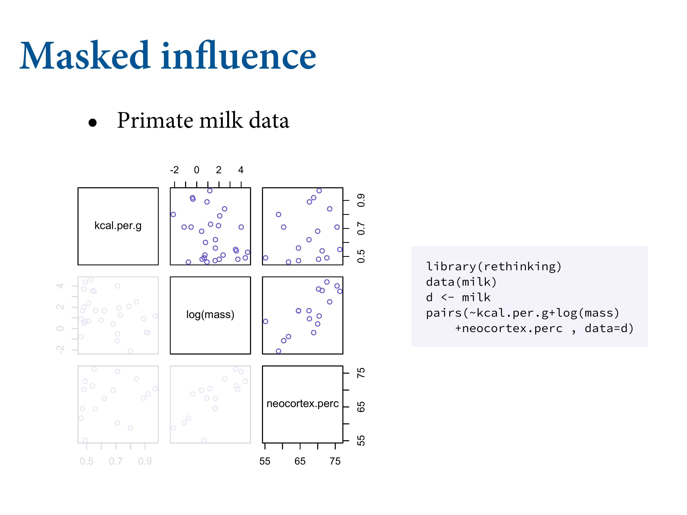
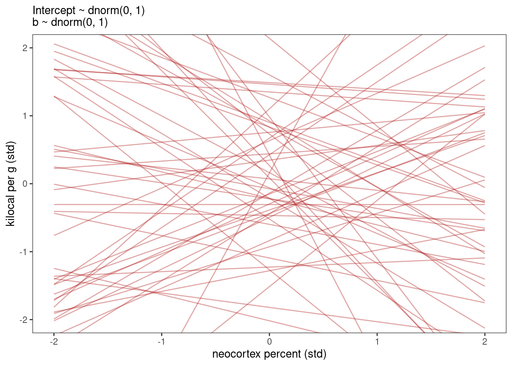
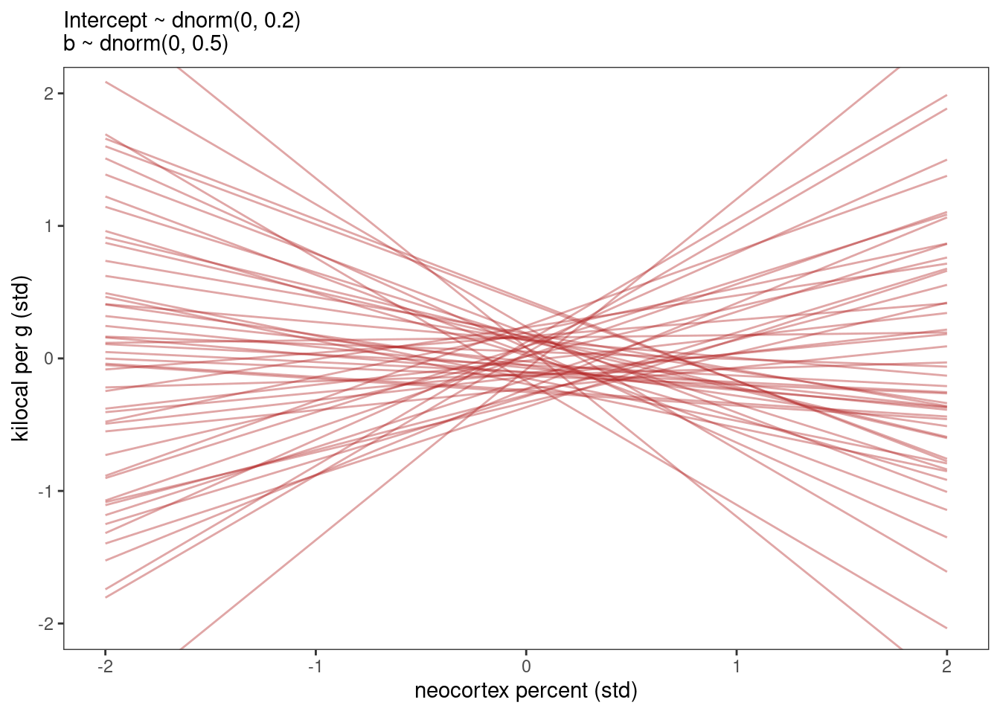
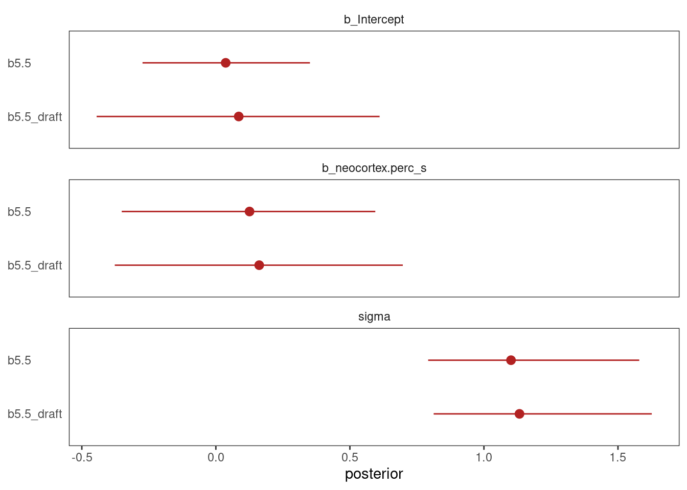
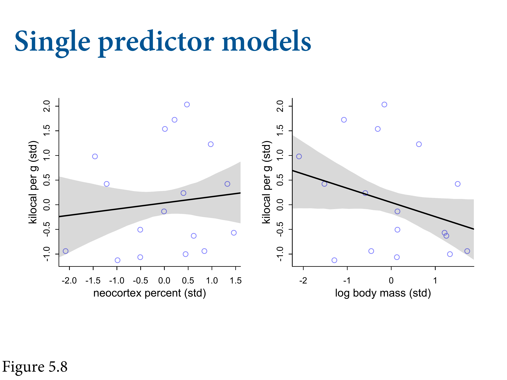
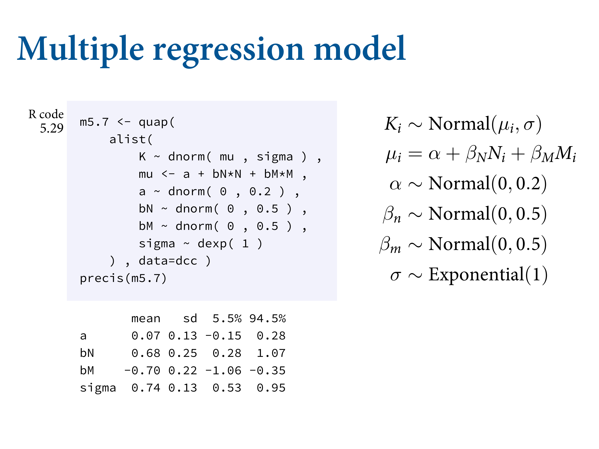
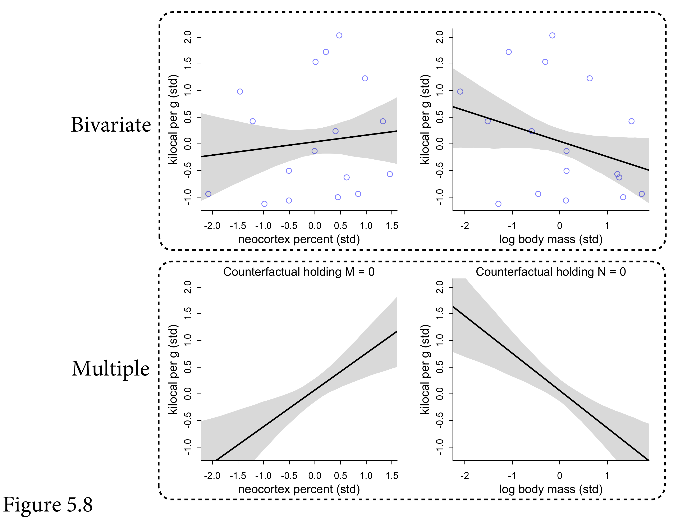
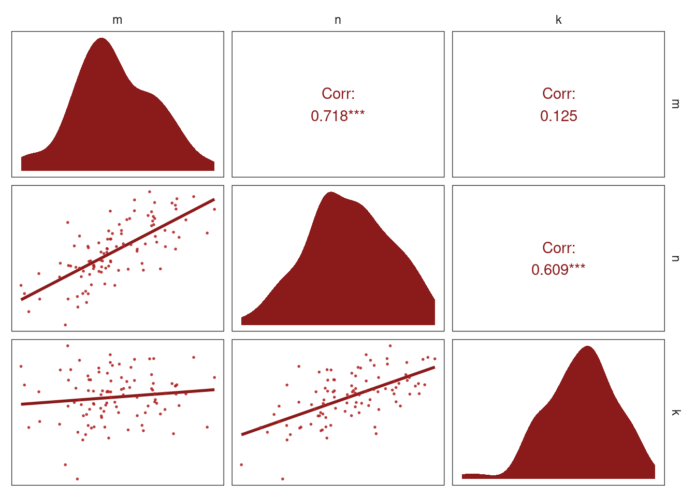

<!DOCTYPE html>
<html lang="" xml:lang="">
<head>

<meta charset="utf-8" />
<meta name="generator" content="pandoc" />
<meta name="viewport" content="width=device-width, initial-scale=1" />
<meta property="og:title" content="5.2 Masked relationship | Notes for Statistical Rethinking 2nd ed. by Richard McElreath" />
<meta property="og:type" content="book" />


<meta name="date" content="2021-12-04" />

<script type="text/x-mathjax-config">
MathJax.Hub.Config({
  TeX: { equationNumbers: { autoNumber: "AMS" } }
});
</script>
  <script src="https://cdn.jsdelivr.net/npm/mathjax@3/es5/tex-chtml-full.js" type="text/javascript"></script>

<meta name="description" content="5.2 Masked relationship | Notes for Statistical Rethinking 2nd ed. by Richard McElreath">

<title>5.2 Masked relationship | Notes for Statistical Rethinking 2nd ed. by Richard McElreath</title>

<script src="libs/header-attrs-2.10/header-attrs.js"></script>
<link href="libs/tufte-css-2015.12.29/tufte-fonts.css" rel="stylesheet" />
<link href="libs/tufte-css-2015.12.29/tufte-background.css" rel="stylesheet" />
<link href="libs/tufte-css-2015.12.29/tufte-italics.css" rel="stylesheet" />
<link href="libs/tufte-css-2015.12.29/tufte.css" rel="stylesheet" />
<link href="libs/tabwid-1.0.0/tabwid.css" rel="stylesheet" />
<script src="libs/htmlwidgets-1.5.3/htmlwidgets.js"></script>
<script src="libs/jquery-3.5.1/jquery.min.js"></script>
<link href="libs/datatables-css-0.0.0/datatables-crosstalk.css" rel="stylesheet" />
<script src="libs/datatables-binding-0.18/datatables.js"></script>
<link href="libs/dt-core-1.10.20/css/jquery.dataTables.min.css" rel="stylesheet" />
<link href="libs/dt-core-1.10.20/css/jquery.dataTables.extra.css" rel="stylesheet" />
<script src="libs/dt-core-1.10.20/js/jquery.dataTables.min.js"></script>
<link href="libs/crosstalk-1.1.1/css/crosstalk.css" rel="stylesheet" />
<script src="libs/crosstalk-1.1.1/js/crosstalk.min.js"></script>


<style type="text/css">code{white-space: pre;}</style>
<style type="text/css">
pre > code.sourceCode { white-space: pre; position: relative; }
pre > code.sourceCode > span { display: inline-block; line-height: 1.25; }
pre > code.sourceCode > span:empty { height: 1.2em; }
.sourceCode { overflow: visible; }
code.sourceCode > span { color: inherit; text-decoration: inherit; }
div.sourceCode { margin: 1em 0; }
pre.sourceCode { margin: 0; }
@media screen {
div.sourceCode { overflow: auto; }
}
@media print {
pre > code.sourceCode { white-space: pre-wrap; }
pre > code.sourceCode > span { text-indent: -5em; padding-left: 5em; }
}
pre.numberSource code
  { counter-reset: source-line 0; }
pre.numberSource code > span
  { position: relative; left: -4em; counter-increment: source-line; }
pre.numberSource code > span > a:first-child::before
  { content: counter(source-line);
    position: relative; left: -1em; text-align: right; vertical-align: baseline;
    border: none; display: inline-block;
    -webkit-touch-callout: none; -webkit-user-select: none;
    -khtml-user-select: none; -moz-user-select: none;
    -ms-user-select: none; user-select: none;
    padding: 0 4px; width: 4em;
    color: #aaaaaa;
  }
pre.numberSource { margin-left: 3em; border-left: 1px solid #aaaaaa;  padding-left: 4px; }
div.sourceCode
  {   }
@media screen {
pre > code.sourceCode > span > a:first-child::before { text-decoration: underline; }
}
code span.al { color: #ff0000; font-weight: bold; } /* Alert */
code span.an { color: #60a0b0; font-weight: bold; font-style: italic; } /* Annotation */
code span.at { color: #7d9029; } /* Attribute */
code span.bn { color: #40a070; } /* BaseN */
code span.bu { } /* BuiltIn */
code span.cf { color: #007020; font-weight: bold; } /* ControlFlow */
code span.ch { color: #4070a0; } /* Char */
code span.cn { color: #880000; } /* Constant */
code span.co { color: #60a0b0; font-style: italic; } /* Comment */
code span.cv { color: #60a0b0; font-weight: bold; font-style: italic; } /* CommentVar */
code span.do { color: #ba2121; font-style: italic; } /* Documentation */
code span.dt { color: #902000; } /* DataType */
code span.dv { color: #40a070; } /* DecVal */
code span.er { color: #ff0000; font-weight: bold; } /* Error */
code span.ex { } /* Extension */
code span.fl { color: #40a070; } /* Float */
code span.fu { color: #06287e; } /* Function */
code span.im { } /* Import */
code span.in { color: #60a0b0; font-weight: bold; font-style: italic; } /* Information */
code span.kw { color: #007020; font-weight: bold; } /* Keyword */
code span.op { color: #666666; } /* Operator */
code span.ot { color: #007020; } /* Other */
code span.pp { color: #bc7a00; } /* Preprocessor */
code span.sc { color: #4070a0; } /* SpecialChar */
code span.ss { color: #bb6688; } /* SpecialString */
code span.st { color: #4070a0; } /* String */
code span.va { color: #19177c; } /* Variable */
code span.vs { color: #4070a0; } /* VerbatimString */
code span.wa { color: #60a0b0; font-weight: bold; font-style: italic; } /* Warning */
</style>


<link rel="stylesheet" href="toc.css" type="text/css" />

</head>

<body>


<div class="row">
<div class="col-sm-12">
<div id="TOC">
<ul>
<li><a href="index.html#index">Index</a></li>
<li><a href="1-the-golem-of-prague.html#the-golem-of-prague"><span class="toc-section-number">1</span> The Golem of Prague</a></li>
<li class="has-sub"><a href="2-small-worlds-and-large-worlds.html#small-worlds-and-large-worlds"><span class="toc-section-number">2</span> Small Worlds and Large Worlds</a>
<ul>
<li><a href="2.1-the-garden-of-forking-data.html#the-garden-of-forking-data"><span class="toc-section-number">2.1</span> The garden of forking data</a></li>
<li><a href="2.2-building-a-model.html#building-a-model"><span class="toc-section-number">2.2</span> Building a model</a></li>
<li><a href="2.3-components-of-the-model.html#components-of-the-model"><span class="toc-section-number">2.3</span> Components of the model</a></li>
<li class="has-sub"><a href="2.4-making-the-model-go.html#making-the-model-go"><span class="toc-section-number">2.4</span> Making the model go</a>
<ul>
<li><a href="2.4-making-the-model-go.html#markov-chain-monte-carlo"><span class="toc-section-number">2.4.1</span> Markov chain Monte Carlo</a></li>
</ul></li>
</ul></li>
<li class="has-sub"><a href="3-sampling-from-the-imaginary.html#sampling-from-the-imaginary"><span class="toc-section-number">3</span> Sampling from the Imaginary</a>
<ul>
<li><a href="3.1-sampling-from-a-grid-approximate-posterior.html#sampling-from-a-grid-approximate-posterior"><span class="toc-section-number">3.1</span> Sampling from a grid-approximate posterior</a></li>
<li><a href="3.2-sampling-to-summarize.html#sampling-to-summarize"><span class="toc-section-number">3.2</span> Sampling to summarize</a></li>
<li><a href="3.3-sampling-to-simulate-prediction.html#sampling-to-simulate-prediction"><span class="toc-section-number">3.3</span> Sampling to simulate prediction</a></li>
<li><a href="3.4-lets-practice-with-brms.html#lets-practice-with-brms"><span class="toc-section-number">3.4</span> Let’s practice with brms</a></li>
<li><a href="practice.html#practice">Practice</a></li>
<li><a href="homework-week-1.html#homework-week-1">Homework: week 1</a></li>
</ul></li>
<li class="has-sub"><a href="4-geocentric-models.html#geocentric-models"><span class="toc-section-number">4</span> Geocentric Models</a>
<ul>
<li><a href="4.1-why-normal-distributions-are-normal.html#why-normal-distributions-are-normal"><span class="toc-section-number">4.1</span> Why normal distributions are normal</a></li>
<li><a href="4.2-a-language-for-describing-models.html#a-language-for-describing-models"><span class="toc-section-number">4.2</span> A language for describing models</a></li>
<li><a href="4.3-gaussian-model-of-height.html#gaussian-model-of-height"><span class="toc-section-number">4.3</span> Gaussian model of height</a></li>
<li><a href="4.4-linear-prediction.html#linear-prediction"><span class="toc-section-number">4.4</span> Linear prediction</a></li>
<li><a href="4.5-curves-from-lines.html#curves-from-lines"><span class="toc-section-number">4.5</span> Curves from lines</a></li>
<li><a href="4.6-practice-1.html#practice-1"><span class="toc-section-number">4.6</span> Practice</a></li>
</ul></li>
<li class="has-sub"><a href="5-the-many-variables-the-spurious-waffles.html#the-many-variables-the-spurious-waffles"><span class="toc-section-number">5</span> The Many Variables &amp; The Spurious Waffles</a>
<ul>
<li><a href="5.1-spurious-association.html#spurious-association"><span class="toc-section-number">5.1</span> Spurious association</a></li>
<li><a href="5.2-masked-relationship.html#masked-relationship"><span class="toc-section-number">5.2</span> Masked relationship</a></li>
<li><a href="5.3-categorical-variables.html#categorical-variables"><span class="toc-section-number">5.3</span> Categorical variables</a></li>
<li><a href="5.4-practice-2.html#practice-2"><span class="toc-section-number">5.4</span> Practice</a></li>
</ul></li>
<li class="has-sub"><a href="6-the-haunted-dag-the-causal-terror.html#the-haunted-dag-the-causal-terror"><span class="toc-section-number">6</span> The Haunted DAG &amp; The Causal Terror</a>
<ul>
<li><a href="6.1-multicollinearity.html#multicollinearity"><span class="toc-section-number">6.1</span> Multicollinearity</a></li>
<li><a href="6.2-post-treatment-bias.html#post-treatment-bias"><span class="toc-section-number">6.2</span> Post-treatment bias</a></li>
<li><a href="6.3-collider-bias.html#collider-bias"><span class="toc-section-number">6.3</span> Collider bias</a></li>
<li><a href="6.4-confronting-confounding.html#confronting-confounding"><span class="toc-section-number">6.4</span> Confronting confounding</a></li>
<li><a href="6.5-summary.html#summary"><span class="toc-section-number">6.5</span> Summary</a></li>
<li><a href="6.6-practice-3.html#practice-3"><span class="toc-section-number">6.6</span> Practice</a></li>
</ul></li>
<li class="has-sub"><a href="7-ulysses-compass.html#ulysses-compass"><span class="toc-section-number">7</span> Ulysses’ Compass</a>
<ul>
<li><a href="7.1-the-problem-with-parameters.html#the-problem-with-parameters"><span class="toc-section-number">7.1</span> The problem with parameters</a></li>
<li><a href="7.2-entropy-and-accuracy.html#entropy-and-accuracy"><span class="toc-section-number">7.2</span> Entropy and accuracy</a></li>
<li><a href="7.3-golem-taming-regularization.html#golem-taming-regularization"><span class="toc-section-number">7.3</span> Golem taming: regularization</a></li>
<li><a href="7.4-predicting-predictive-accuracy.html#predicting-predictive-accuracy"><span class="toc-section-number">7.4</span> Predicting predictive accuracy</a></li>
<li><a href="7.5-model-comparison.html#model-comparison"><span class="toc-section-number">7.5</span> Model comparison</a></li>
<li><a href="7.6-practice-4.html#practice-4"><span class="toc-section-number">7.6</span> Practice</a></li>
</ul></li>
<li class="has-sub"><a href="8-conditional-manatees.html#conditional-manatees"><span class="toc-section-number">8</span> Conditional Manatees</a>
<ul>
<li><a href="8.1-building-an-interaction.html#building-an-interaction"><span class="toc-section-number">8.1</span> Building an interaction</a></li>
<li><a href="8.2-symmetry-of-interactions.html#symmetry-of-interactions"><span class="toc-section-number">8.2</span> Symmetry of interactions</a></li>
<li><a href="8.3-continuous-interactions.html#continuous-interactions"><span class="toc-section-number">8.3</span> Continuous interactions</a></li>
</ul></li>
<li class="has-sub"><a href="9-markov-chain-monte-carlo-1.html#markov-chain-monte-carlo-1"><span class="toc-section-number">9</span> Markov Chain Monte Carlo</a>
<ul>
<li><a href="9.1-good-king-markov-and-his-island-kingdom.html#good-king-markov-and-his-island-kingdom"><span class="toc-section-number">9.1</span> Good King Markov and his island kingdom</a></li>
<li><a href="9.2-metropolis-algorithm.html#metropolis-algorithm"><span class="toc-section-number">9.2</span> Metropolis algorithm</a></li>
<li><a href="9.3-hamiltonian-monte-carlo.html#hamiltonian-monte-carlo"><span class="toc-section-number">9.3</span> Hamiltonian Monte Carlo</a></li>
<li><a href="9.4-easy-hmc-ulam.html#easy-hmc-ulam"><span class="toc-section-number">9.4</span> Easy HMC: <code>ulam</code></a></li>
<li><a href="9.5-care-and-feeding-of-your-markov-chain.html#care-and-feeding-of-your-markov-chain"><span class="toc-section-number">9.5</span> Care and feeding of your Markov chain</a></li>
</ul></li>
<li class="has-sub"><a href="10-big-entropy-and-the-generalized-linear-model.html#big-entropy-and-the-generalized-linear-model"><span class="toc-section-number">10</span> Big Entropy and the Generalized Linear Model</a>
<ul>
<li><a href="10.1-maximum-entropy.html#maximum-entropy"><span class="toc-section-number">10.1</span> Maximum entropy</a></li>
<li><a href="10.2-generalized-linear-models.html#generalized-linear-models"><span class="toc-section-number">10.2</span> Generalized linear models</a></li>
</ul></li>
<li class="has-sub"><a href="11-god-spiked-the-integers.html#god-spiked-the-integers"><span class="toc-section-number">11</span> God Spiked the Integers</a>
<ul>
<li><a href="11.1-binomial-regression.html#binomial-regression"><span class="toc-section-number">11.1</span> Binomial regression</a></li>
<li><a href="11.2-poisson-regression.html#poisson-regression"><span class="toc-section-number">11.2</span> Poisson regression</a></li>
<li><a href="11.3-multinomial-and-categorical-models.html#multinomial-and-categorical-models"><span class="toc-section-number">11.3</span> Multinomial and categorical models</a></li>
</ul></li>
<li class="has-sub"><a href="12-models-with-memory.html#models-with-memory"><span class="toc-section-number">12</span> Models With Memory</a>
<ul>
<li><a href="12.1-example-multilevel-tadpoles.html#example-multilevel-tadpoles"><span class="toc-section-number">12.1</span> Example: Multilevel tadpoles</a></li>
<li><a href="12.2-varying-effects-and-the-underfittingoverfitting-trade-off.html#varying-effects-and-the-underfittingoverfitting-trade-off"><span class="toc-section-number">12.2</span> Varying effects and the underfitting/overfitting trade-off</a></li>
<li><a href="12.3-more-than-one-type-of-cluster.html#more-than-one-type-of-cluster"><span class="toc-section-number">12.3</span> More than one type of cluster</a></li>
<li><a href="12.4-divergent-transitions-and-non-centered-priors.html#divergent-transitions-and-non-centered-priors"><span class="toc-section-number">12.4</span> Divergent transitions and non-centered priors</a></li>
<li><a href="12.5-multilevel-posterior-predictions.html#multilevel-posterior-predictions"><span class="toc-section-number">12.5</span> Multilevel posterior predictions</a></li>
</ul></li>
<li class="has-sub"><a href="13-adventures-in-covariance.html#adventures-in-covariance"><span class="toc-section-number">13</span> Adventures in Covariance</a>
<ul>
<li><a href="13.1-varying-slopes-by-construction.html#varying-slopes-by-construction"><span class="toc-section-number">13.1</span> Varying slopes by construction</a></li>
<li><a href="13.2-advanced-varying-slopes.html#advanced-varying-slopes"><span class="toc-section-number">13.2</span> Advanced varying slopes</a></li>
<li><a href="13.3-instruments-and-causal-designs.html#instruments-and-causal-designs"><span class="toc-section-number">13.3</span> Instruments and causal designs</a></li>
<li><a href="13.4-social-relations-as-correlated-varying-effects.html#social-relations-as-correlated-varying-effects"><span class="toc-section-number">13.4</span> Social relations as correlated varying effects</a></li>
<li><a href="13.5-continuous-categories-and-the-gaussian-process.html#continuous-categories-and-the-gaussian-process"><span class="toc-section-number">13.5</span> Continuous categories and the Gaussian process</a></li>
<li><a href="13.6-bonus-multilevel-growth-models-and-the-melsm.html#bonus-multilevel-growth-models-and-the-melsm"><span class="toc-section-number">13.6</span> Bonus: Multilevel growth models and the MELSM</a></li>
</ul></li>
<li class="has-sub"><a href="14-missing-data-and-other-opportunities.html#missing-data-and-other-opportunities"><span class="toc-section-number">14</span> Missing Data and Other Opportunities</a>
<ul>
<li><a href="14.1-measurement-error.html#measurement-error"><span class="toc-section-number">14.1</span> Measurement error</a></li>
<li><a href="14.2-missing-data.html#missing-data"><span class="toc-section-number">14.2</span> Missing data</a></li>
</ul></li>
</ul>
</div>
</div>
</div>
<div class="row">
<div class="col-sm-12">
<div id="masked-relationship" class="section level2" number="5.2">
<h2><span class="header-section-number">5.2</span> Masked relationship</h2>
<div class="figure">

<p class="caption marginnote shownote">
Another good thing regression can do is reveal spurious correlations. When there are two predictors that both influence the outcome in different directions, you can get the total causal effect between the two. This tends to arise where you have two predictors, and they act in different directions, and cancel each other out, so if you don’t model both of them individually, it looks like they have no effect. Noise can also cause you not to see a relationship.
</p>
</div>
<div class="figure">

<p class="caption marginnote shownote">
Relationship between milk energy and how brainy they are? Intersted in things that are interested in what makes us unique. Primates are mammals, and some mammals have very highly energetic milk, like seals basically ooze butter. Primates in contrast carry their offspring on them. As a consequence, the energy density is lower. Human milk is not energetically rich. 75% of our brain mass is neocortex. Then the brainiest primate is <em>Cebus</em>. Can we see a signal of selection on milk energy from braininess?
</p>
</div>
<div class="figure">

<p class="caption marginnote shownote">
Sample of primate species. Pairs plot. Particularly strong correlation between the magnitude of body mass (log(mass)) is strongly correlated with neocortex. No particular strong relationship between <code>log(mass)</code> and <code>kcal.per.g</code>.
</p>
</div>
<div class="sourceCode" id="cb322"><pre class="sourceCode r"><code class="sourceCode r"><span id="cb322-1"><a href="5.2-masked-relationship.html#cb322-1" aria-hidden="true" tabindex="-1"></a><span class="fu">data</span>(milk, <span class="at">package =</span> <span class="st">&quot;rethinking&quot;</span>)</span>
<span id="cb322-2"><a href="5.2-masked-relationship.html#cb322-2" aria-hidden="true" tabindex="-1"></a>d <span class="ot">&lt;-</span> milk</span>
<span id="cb322-3"><a href="5.2-masked-relationship.html#cb322-3" aria-hidden="true" tabindex="-1"></a><span class="fu">rm</span>(milk)</span>
<span id="cb322-4"><a href="5.2-masked-relationship.html#cb322-4" aria-hidden="true" tabindex="-1"></a></span>
<span id="cb322-5"><a href="5.2-masked-relationship.html#cb322-5" aria-hidden="true" tabindex="-1"></a><span class="fu">glimpse</span>(d)</span></code></pre></div>
<pre><code>## Rows: 29
## Columns: 8
## $ clade          &lt;fct&gt; Strepsirrhine, Strepsirrhine, Strepsirrhine, Strepsirrh…
## $ species        &lt;fct&gt; Eulemur fulvus, E macaco, E mongoz, E rubriventer, Lemu…
## $ kcal.per.g     &lt;dbl&gt; 0.49, 0.51, 0.46, 0.48, 0.60, 0.47, 0.56, 0.89, 0.91, 0…
## $ perc.fat       &lt;dbl&gt; 16.60, 19.27, 14.11, 14.91, 27.28, 21.22, 29.66, 53.41,…
## $ perc.protein   &lt;dbl&gt; 15.42, 16.91, 16.85, 13.18, 19.50, 23.58, 23.46, 15.80,…
## $ perc.lactose   &lt;dbl&gt; 67.98, 63.82, 69.04, 71.91, 53.22, 55.20, 46.88, 30.79,…
## $ mass           &lt;dbl&gt; 1.95, 2.09, 2.51, 1.62, 2.19, 5.25, 5.37, 2.51, 0.71, 0…
## $ neocortex.perc &lt;dbl&gt; 55.16, NA, NA, NA, NA, 64.54, 64.54, 67.64, NA, 68.85, …</code></pre>
<div class="sourceCode" id="cb324"><pre class="sourceCode r"><code class="sourceCode r"><span id="cb324-1"><a href="5.2-masked-relationship.html#cb324-1" aria-hidden="true" tabindex="-1"></a>d <span class="sc">%&gt;%</span> </span>
<span id="cb324-2"><a href="5.2-masked-relationship.html#cb324-2" aria-hidden="true" tabindex="-1"></a>  dplyr<span class="sc">::</span><span class="fu">select</span>(kcal.per.g, mass, neocortex.perc) <span class="sc">%&gt;%</span> </span>
<span id="cb324-3"><a href="5.2-masked-relationship.html#cb324-3" aria-hidden="true" tabindex="-1"></a>  <span class="fu">pairs</span>(<span class="at">col =</span> <span class="st">&quot;firebrick4&quot;</span>)</span></code></pre></div>
<p></p>
<p>As before, standardising helps us both get a reliable approximation of the posterior as well as build reasonable priors.</p>
<div class="sourceCode" id="cb325"><pre class="sourceCode r"><code class="sourceCode r"><span id="cb325-1"><a href="5.2-masked-relationship.html#cb325-1" aria-hidden="true" tabindex="-1"></a>d <span class="ot">&lt;-</span></span>
<span id="cb325-2"><a href="5.2-masked-relationship.html#cb325-2" aria-hidden="true" tabindex="-1"></a>  d <span class="sc">%&gt;%</span> </span>
<span id="cb325-3"><a href="5.2-masked-relationship.html#cb325-3" aria-hidden="true" tabindex="-1"></a>  <span class="fu">mutate</span>(<span class="at">kcal.per.g_s     =</span> (kcal.per.g <span class="sc">-</span> <span class="fu">mean</span>(kcal.per.g)) <span class="sc">/</span> <span class="fu">sd</span>(kcal.per.g), </span>
<span id="cb325-4"><a href="5.2-masked-relationship.html#cb325-4" aria-hidden="true" tabindex="-1"></a>         <span class="at">log_mass_s       =</span> (<span class="fu">log</span>(mass) <span class="sc">-</span> <span class="fu">mean</span>(<span class="fu">log</span>(mass))) <span class="sc">/</span> <span class="fu">sd</span>(<span class="fu">log</span>(mass)), </span>
<span id="cb325-5"><a href="5.2-masked-relationship.html#cb325-5" aria-hidden="true" tabindex="-1"></a>         <span class="at">neocortex.perc_s =</span> (neocortex.perc <span class="sc">-</span> <span class="fu">mean</span>(neocortex.perc, <span class="at">na.rm =</span> T)) <span class="sc">/</span> <span class="fu">sd</span>(neocortex.perc, <span class="at">na.rm =</span> T)</span>
<span id="cb325-6"><a href="5.2-masked-relationship.html#cb325-6" aria-hidden="true" tabindex="-1"></a>         )</span></code></pre></div>
<p>Let’s first just try to run this as a quap model with some vague priors:</p>
<div class="sourceCode" id="cb326"><pre class="sourceCode r"><code class="sourceCode r"><span id="cb326-1"><a href="5.2-masked-relationship.html#cb326-1" aria-hidden="true" tabindex="-1"></a>b5<span class="fl">.5</span>_draft <span class="ot">&lt;-</span> </span>
<span id="cb326-2"><a href="5.2-masked-relationship.html#cb326-2" aria-hidden="true" tabindex="-1"></a>  <span class="fu">brm</span>(<span class="at">data =</span> d, </span>
<span id="cb326-3"><a href="5.2-masked-relationship.html#cb326-3" aria-hidden="true" tabindex="-1"></a>      <span class="at">family =</span> gaussian,</span>
<span id="cb326-4"><a href="5.2-masked-relationship.html#cb326-4" aria-hidden="true" tabindex="-1"></a>      kcal.per.g_s <span class="sc">~</span> <span class="dv">1</span> <span class="sc">+</span> neocortex.perc_s,</span>
<span id="cb326-5"><a href="5.2-masked-relationship.html#cb326-5" aria-hidden="true" tabindex="-1"></a>      <span class="at">prior =</span> <span class="fu">c</span>(<span class="fu">prior</span>(<span class="fu">normal</span>(<span class="dv">0</span>, <span class="dv">1</span>), <span class="at">class =</span> Intercept),</span>
<span id="cb326-6"><a href="5.2-masked-relationship.html#cb326-6" aria-hidden="true" tabindex="-1"></a>                <span class="fu">prior</span>(<span class="fu">normal</span>(<span class="dv">0</span>, <span class="dv">1</span>), <span class="at">class =</span> b),</span>
<span id="cb326-7"><a href="5.2-masked-relationship.html#cb326-7" aria-hidden="true" tabindex="-1"></a>                <span class="fu">prior</span>(<span class="fu">exponential</span>(<span class="dv">1</span>), <span class="at">class =</span> sigma)),</span>
<span id="cb326-8"><a href="5.2-masked-relationship.html#cb326-8" aria-hidden="true" tabindex="-1"></a>      <span class="at">iter =</span> <span class="dv">2000</span>, <span class="at">warmup =</span> <span class="dv">1000</span>, <span class="at">chains =</span> <span class="dv">4</span>, <span class="at">cores =</span> <span class="dv">4</span>,</span>
<span id="cb326-9"><a href="5.2-masked-relationship.html#cb326-9" aria-hidden="true" tabindex="-1"></a>      <span class="at">seed =</span> <span class="dv">5</span>,</span>
<span id="cb326-10"><a href="5.2-masked-relationship.html#cb326-10" aria-hidden="true" tabindex="-1"></a>      <span class="at">sample_prior =</span> T,</span>
<span id="cb326-11"><a href="5.2-masked-relationship.html#cb326-11" aria-hidden="true" tabindex="-1"></a>      <span class="at">file =</span> <span class="st">&quot;fits/b05.05_draft&quot;</span>)</span></code></pre></div>
<p>The culprit is the missing values in <code>N</code>.</p>
<p>Here we’ll just drop the missing values, known as <strong>complete case analysis</strong>. But it isn’t always a good thing - see Chapter 15.</p>
<div class="sourceCode" id="cb327"><pre class="sourceCode r"><code class="sourceCode r"><span id="cb327-1"><a href="5.2-masked-relationship.html#cb327-1" aria-hidden="true" tabindex="-1"></a>dcc <span class="ot">&lt;-</span> </span>
<span id="cb327-2"><a href="5.2-masked-relationship.html#cb327-2" aria-hidden="true" tabindex="-1"></a>  d <span class="sc">%&gt;%</span></span>
<span id="cb327-3"><a href="5.2-masked-relationship.html#cb327-3" aria-hidden="true" tabindex="-1"></a>  <span class="fu">drop_na</span>(<span class="fu">ends_with</span>(<span class="st">&quot;_s&quot;</span>))</span>
<span id="cb327-4"><a href="5.2-masked-relationship.html#cb327-4" aria-hidden="true" tabindex="-1"></a></span>
<span id="cb327-5"><a href="5.2-masked-relationship.html#cb327-5" aria-hidden="true" tabindex="-1"></a><span class="co"># how many rows did we drop?</span></span>
<span id="cb327-6"><a href="5.2-masked-relationship.html#cb327-6" aria-hidden="true" tabindex="-1"></a><span class="fu">nrow</span>(d) <span class="sc">-</span> <span class="fu">nrow</span>(dcc)</span></code></pre></div>
<pre><code>## [1] 12</code></pre>
<p>Now let’s model with that.</p>
<div class="sourceCode" id="cb329"><pre class="sourceCode r"><code class="sourceCode r"><span id="cb329-1"><a href="5.2-masked-relationship.html#cb329-1" aria-hidden="true" tabindex="-1"></a>b5<span class="fl">.5</span>_draft <span class="ot">&lt;-</span> </span>
<span id="cb329-2"><a href="5.2-masked-relationship.html#cb329-2" aria-hidden="true" tabindex="-1"></a>  <span class="fu">brm</span>(<span class="at">data =</span> dcc, </span>
<span id="cb329-3"><a href="5.2-masked-relationship.html#cb329-3" aria-hidden="true" tabindex="-1"></a>      <span class="at">family =</span> gaussian,</span>
<span id="cb329-4"><a href="5.2-masked-relationship.html#cb329-4" aria-hidden="true" tabindex="-1"></a>      kcal.per.g_s <span class="sc">~</span> <span class="dv">1</span> <span class="sc">+</span> neocortex.perc_s,</span>
<span id="cb329-5"><a href="5.2-masked-relationship.html#cb329-5" aria-hidden="true" tabindex="-1"></a>      <span class="at">prior =</span> <span class="fu">c</span>(<span class="fu">prior</span>(<span class="fu">normal</span>(<span class="dv">0</span>, <span class="dv">1</span>), <span class="at">class =</span> Intercept),</span>
<span id="cb329-6"><a href="5.2-masked-relationship.html#cb329-6" aria-hidden="true" tabindex="-1"></a>                <span class="fu">prior</span>(<span class="fu">normal</span>(<span class="dv">0</span>, <span class="dv">1</span>), <span class="at">class =</span> b),</span>
<span id="cb329-7"><a href="5.2-masked-relationship.html#cb329-7" aria-hidden="true" tabindex="-1"></a>                <span class="fu">prior</span>(<span class="fu">exponential</span>(<span class="dv">1</span>), <span class="at">class =</span> sigma)),</span>
<span id="cb329-8"><a href="5.2-masked-relationship.html#cb329-8" aria-hidden="true" tabindex="-1"></a>      <span class="at">iter =</span> <span class="dv">2000</span>, <span class="at">warmup =</span> <span class="dv">1000</span>, <span class="at">chains =</span> <span class="dv">4</span>, <span class="at">cores =</span> <span class="dv">4</span>,</span>
<span id="cb329-9"><a href="5.2-masked-relationship.html#cb329-9" aria-hidden="true" tabindex="-1"></a>      <span class="at">seed =</span> <span class="dv">5</span>,</span>
<span id="cb329-10"><a href="5.2-masked-relationship.html#cb329-10" aria-hidden="true" tabindex="-1"></a>      <span class="at">sample_prior =</span> T,</span>
<span id="cb329-11"><a href="5.2-masked-relationship.html#cb329-11" aria-hidden="true" tabindex="-1"></a>      <span class="at">file =</span> <span class="st">&quot;fits/b05.05_draft&quot;</span>)</span></code></pre></div>
<p>Simulate and plot 50 prior regression lines.</p>
<div class="sourceCode" id="cb330"><pre class="sourceCode r"><code class="sourceCode r"><span id="cb330-1"><a href="5.2-masked-relationship.html#cb330-1" aria-hidden="true" tabindex="-1"></a><span class="fu">set.seed</span>(<span class="dv">5</span>)</span>
<span id="cb330-2"><a href="5.2-masked-relationship.html#cb330-2" aria-hidden="true" tabindex="-1"></a></span>
<span id="cb330-3"><a href="5.2-masked-relationship.html#cb330-3" aria-hidden="true" tabindex="-1"></a><span class="fu">prior_samples</span>(b5<span class="fl">.5</span>_draft) <span class="sc">%&gt;%</span> </span>
<span id="cb330-4"><a href="5.2-masked-relationship.html#cb330-4" aria-hidden="true" tabindex="-1"></a>  <span class="fu">slice_sample</span>(<span class="at">n =</span> <span class="dv">50</span>) <span class="sc">%&gt;%</span> </span>
<span id="cb330-5"><a href="5.2-masked-relationship.html#cb330-5" aria-hidden="true" tabindex="-1"></a>  <span class="fu">rownames_to_column</span>() <span class="sc">%&gt;%</span> </span>
<span id="cb330-6"><a href="5.2-masked-relationship.html#cb330-6" aria-hidden="true" tabindex="-1"></a>  <span class="fu">expand</span>(<span class="fu">nesting</span>(rowname, Intercept, b),</span>
<span id="cb330-7"><a href="5.2-masked-relationship.html#cb330-7" aria-hidden="true" tabindex="-1"></a>         <span class="at">neocortex.perc_s =</span> <span class="fu">c</span>(<span class="sc">-</span><span class="dv">2</span>, <span class="dv">2</span>)) <span class="sc">%&gt;%</span> </span>
<span id="cb330-8"><a href="5.2-masked-relationship.html#cb330-8" aria-hidden="true" tabindex="-1"></a>  <span class="fu">mutate</span>(<span class="at">kcal.per.g_s =</span> Intercept <span class="sc">+</span> b <span class="sc">*</span> neocortex.perc_s) <span class="sc">%&gt;%</span> </span>
<span id="cb330-9"><a href="5.2-masked-relationship.html#cb330-9" aria-hidden="true" tabindex="-1"></a>  </span>
<span id="cb330-10"><a href="5.2-masked-relationship.html#cb330-10" aria-hidden="true" tabindex="-1"></a>  <span class="fu">ggplot</span>(<span class="fu">aes</span>(<span class="at">x =</span> neocortex.perc_s, <span class="at">y =</span> kcal.per.g_s)) <span class="sc">+</span></span>
<span id="cb330-11"><a href="5.2-masked-relationship.html#cb330-11" aria-hidden="true" tabindex="-1"></a>  <span class="fu">geom_line</span>(<span class="fu">aes</span>(<span class="at">group =</span> rowname),</span>
<span id="cb330-12"><a href="5.2-masked-relationship.html#cb330-12" aria-hidden="true" tabindex="-1"></a>            <span class="at">color =</span> <span class="st">&quot;firebrick&quot;</span>, <span class="at">alpha =</span> .<span class="dv">4</span>) <span class="sc">+</span></span>
<span id="cb330-13"><a href="5.2-masked-relationship.html#cb330-13" aria-hidden="true" tabindex="-1"></a>  <span class="fu">coord_cartesian</span>(<span class="at">ylim =</span> <span class="fu">c</span>(<span class="sc">-</span><span class="dv">2</span>, <span class="dv">2</span>)) <span class="sc">+</span></span>
<span id="cb330-14"><a href="5.2-masked-relationship.html#cb330-14" aria-hidden="true" tabindex="-1"></a>  <span class="fu">labs</span>(<span class="at">x =</span> <span class="st">&quot;neocortex percent (std)&quot;</span>,</span>
<span id="cb330-15"><a href="5.2-masked-relationship.html#cb330-15" aria-hidden="true" tabindex="-1"></a>       <span class="at">y =</span> <span class="st">&quot;kilocal per g (std)&quot;</span>,</span>
<span id="cb330-16"><a href="5.2-masked-relationship.html#cb330-16" aria-hidden="true" tabindex="-1"></a>       <span class="at">subtitle =</span> <span class="st">&quot;Intercept ~ dnorm(0, 1)</span><span class="sc">\n</span><span class="st">b ~ dnorm(0, 1)&quot;</span>) <span class="sc">+</span></span>
<span id="cb330-17"><a href="5.2-masked-relationship.html#cb330-17" aria-hidden="true" tabindex="-1"></a>  <span class="fu">theme_bw</span>() <span class="sc">+</span></span>
<span id="cb330-18"><a href="5.2-masked-relationship.html#cb330-18" aria-hidden="true" tabindex="-1"></a>  <span class="fu">theme</span>(<span class="at">panel.grid =</span> <span class="fu">element_blank</span>()) </span></code></pre></div>
<p></p>
<div class="sourceCode" id="cb331"><pre class="sourceCode r"><code class="sourceCode r"><span id="cb331-1"><a href="5.2-masked-relationship.html#cb331-1" aria-hidden="true" tabindex="-1"></a><span class="fu">print</span>(b5<span class="fl">.5</span>_draft)</span></code></pre></div>
<pre><code>##  Family: gaussian 
##   Links: mu = identity; sigma = identity 
## Formula: kcal.per.g_s ~ 1 + neocortex.perc_s 
##    Data: d (Number of observations: 17) 
## Samples: 4 chains, each with iter = 2000; warmup = 1000; thin = 1;
##          total post-warmup samples = 4000
## 
## Population-Level Effects: 
##                  Estimate Est.Error l-95% CI u-95% CI Rhat Bulk_ESS Tail_ESS
## Intercept            0.09      0.26    -0.44     0.61 1.00     3341     2624
## neocortex.perc_s     0.16      0.27    -0.38     0.70 1.00     3647     2763
## 
## Family Specific Parameters: 
##       Estimate Est.Error l-95% CI u-95% CI Rhat Bulk_ESS Tail_ESS
## sigma     1.13      0.21     0.81     1.63 1.00     2827     2553
## 
## Samples were drawn using sampling(NUTS). For each parameter, Bulk_ESS
## and Tail_ESS are effective sample size measures, and Rhat is the potential
## scale reduction factor on split chains (at convergence, Rhat = 1).</code></pre>
<p>Tighten up the fit:</p>
<div class="sourceCode" id="cb333"><pre class="sourceCode r"><code class="sourceCode r"><span id="cb333-1"><a href="5.2-masked-relationship.html#cb333-1" aria-hidden="true" tabindex="-1"></a>b5<span class="fl">.5</span> <span class="ot">&lt;-</span> </span>
<span id="cb333-2"><a href="5.2-masked-relationship.html#cb333-2" aria-hidden="true" tabindex="-1"></a>  <span class="fu">brm</span>(<span class="at">data =</span> dcc, </span>
<span id="cb333-3"><a href="5.2-masked-relationship.html#cb333-3" aria-hidden="true" tabindex="-1"></a>      <span class="at">family =</span> gaussian,</span>
<span id="cb333-4"><a href="5.2-masked-relationship.html#cb333-4" aria-hidden="true" tabindex="-1"></a>      kcal.per.g_s <span class="sc">~</span> <span class="dv">1</span> <span class="sc">+</span> neocortex.perc_s,</span>
<span id="cb333-5"><a href="5.2-masked-relationship.html#cb333-5" aria-hidden="true" tabindex="-1"></a>      <span class="at">prior =</span> <span class="fu">c</span>(<span class="fu">prior</span>(<span class="fu">normal</span>(<span class="dv">0</span>, <span class="fl">0.2</span>), <span class="at">class =</span> Intercept),</span>
<span id="cb333-6"><a href="5.2-masked-relationship.html#cb333-6" aria-hidden="true" tabindex="-1"></a>                <span class="fu">prior</span>(<span class="fu">normal</span>(<span class="dv">0</span>, <span class="fl">0.5</span>), <span class="at">class =</span> b),</span>
<span id="cb333-7"><a href="5.2-masked-relationship.html#cb333-7" aria-hidden="true" tabindex="-1"></a>                <span class="fu">prior</span>(<span class="fu">exponential</span>(<span class="dv">1</span>), <span class="at">class =</span> sigma)),</span>
<span id="cb333-8"><a href="5.2-masked-relationship.html#cb333-8" aria-hidden="true" tabindex="-1"></a>      <span class="at">iter =</span> <span class="dv">2000</span>, <span class="at">warmup =</span> <span class="dv">1000</span>, <span class="at">chains =</span> <span class="dv">4</span>, <span class="at">cores =</span> <span class="dv">4</span>,</span>
<span id="cb333-9"><a href="5.2-masked-relationship.html#cb333-9" aria-hidden="true" tabindex="-1"></a>      <span class="at">seed =</span> <span class="dv">5</span>,</span>
<span id="cb333-10"><a href="5.2-masked-relationship.html#cb333-10" aria-hidden="true" tabindex="-1"></a>      <span class="at">sample_prior =</span> T,</span>
<span id="cb333-11"><a href="5.2-masked-relationship.html#cb333-11" aria-hidden="true" tabindex="-1"></a>      <span class="at">file =</span> <span class="st">&quot;fits/b05.05&quot;</span>)</span></code></pre></div>
<div class="sourceCode" id="cb334"><pre class="sourceCode r"><code class="sourceCode r"><span id="cb334-1"><a href="5.2-masked-relationship.html#cb334-1" aria-hidden="true" tabindex="-1"></a><span class="fu">set.seed</span>(<span class="dv">5</span>)</span>
<span id="cb334-2"><a href="5.2-masked-relationship.html#cb334-2" aria-hidden="true" tabindex="-1"></a><span class="fu">prior_samples</span>(b5<span class="fl">.5</span>) <span class="sc">%&gt;%</span> </span>
<span id="cb334-3"><a href="5.2-masked-relationship.html#cb334-3" aria-hidden="true" tabindex="-1"></a>  <span class="fu">slice_sample</span>(<span class="at">n =</span> <span class="dv">50</span>) <span class="sc">%&gt;%</span> </span>
<span id="cb334-4"><a href="5.2-masked-relationship.html#cb334-4" aria-hidden="true" tabindex="-1"></a>  <span class="fu">rownames_to_column</span>() <span class="sc">%&gt;%</span> </span>
<span id="cb334-5"><a href="5.2-masked-relationship.html#cb334-5" aria-hidden="true" tabindex="-1"></a>  <span class="fu">expand</span>(<span class="fu">nesting</span>(rowname, Intercept, b),</span>
<span id="cb334-6"><a href="5.2-masked-relationship.html#cb334-6" aria-hidden="true" tabindex="-1"></a>         <span class="at">neocortex.perc_s =</span> <span class="fu">c</span>(<span class="sc">-</span><span class="dv">2</span>, <span class="dv">2</span>)) <span class="sc">%&gt;%</span> </span>
<span id="cb334-7"><a href="5.2-masked-relationship.html#cb334-7" aria-hidden="true" tabindex="-1"></a>  <span class="fu">mutate</span>(<span class="at">kcal.per.g_s =</span> Intercept <span class="sc">+</span> b <span class="sc">*</span> neocortex.perc_s) <span class="sc">%&gt;%</span> </span>
<span id="cb334-8"><a href="5.2-masked-relationship.html#cb334-8" aria-hidden="true" tabindex="-1"></a>  </span>
<span id="cb334-9"><a href="5.2-masked-relationship.html#cb334-9" aria-hidden="true" tabindex="-1"></a>  <span class="fu">ggplot</span>(<span class="fu">aes</span>(<span class="at">x =</span> neocortex.perc_s, <span class="at">y =</span> kcal.per.g_s, <span class="at">group =</span> rowname)) <span class="sc">+</span></span>
<span id="cb334-10"><a href="5.2-masked-relationship.html#cb334-10" aria-hidden="true" tabindex="-1"></a>  <span class="fu">geom_line</span>(<span class="at">color =</span> <span class="st">&quot;firebrick&quot;</span>, <span class="at">alpha =</span> .<span class="dv">4</span>) <span class="sc">+</span></span>
<span id="cb334-11"><a href="5.2-masked-relationship.html#cb334-11" aria-hidden="true" tabindex="-1"></a>  <span class="fu">coord_cartesian</span>(<span class="at">ylim =</span> <span class="fu">c</span>(<span class="sc">-</span><span class="dv">2</span>, <span class="dv">2</span>)) <span class="sc">+</span></span>
<span id="cb334-12"><a href="5.2-masked-relationship.html#cb334-12" aria-hidden="true" tabindex="-1"></a>  <span class="fu">labs</span>(<span class="at">subtitle =</span> <span class="st">&quot;Intercept ~ dnorm(0, 0.2)</span><span class="sc">\n</span><span class="st">b ~ dnorm(0, 0.5)&quot;</span>,</span>
<span id="cb334-13"><a href="5.2-masked-relationship.html#cb334-13" aria-hidden="true" tabindex="-1"></a>       <span class="at">x =</span> <span class="st">&quot;neocortex percent (std)&quot;</span>,</span>
<span id="cb334-14"><a href="5.2-masked-relationship.html#cb334-14" aria-hidden="true" tabindex="-1"></a>       <span class="at">y =</span> <span class="st">&quot;kilocal per g (std)&quot;</span>) <span class="sc">+</span></span>
<span id="cb334-15"><a href="5.2-masked-relationship.html#cb334-15" aria-hidden="true" tabindex="-1"></a>  <span class="fu">theme_bw</span>() <span class="sc">+</span></span>
<span id="cb334-16"><a href="5.2-masked-relationship.html#cb334-16" aria-hidden="true" tabindex="-1"></a>  <span class="fu">theme</span>(<span class="at">panel.grid =</span> <span class="fu">element_blank</span>()) </span></code></pre></div>
<div class="figure">

<p class="caption marginnote shownote">
Figure 5.8b
</p>
</div>
<div class="figure">

<p class="caption marginnote shownote">
We need to do some prior predictive simulation. Left is not a good prior. All we need to do to get the regression lines to live in the outcome space, we can contract <span class="math inline">\(lpha\)</span> - should be about 0, and the slope should be about 0.5 to be tighter. If you standardise the predictor and outcome, Normal(0, 0.5) should keep you in the outcome space.
</p>
</div>
<div class="sourceCode" id="cb335"><pre class="sourceCode r"><code class="sourceCode r"><span id="cb335-1"><a href="5.2-masked-relationship.html#cb335-1" aria-hidden="true" tabindex="-1"></a><span class="fu">print</span>(b5<span class="fl">.5</span>)</span></code></pre></div>
<pre><code>##  Family: gaussian 
##   Links: mu = identity; sigma = identity 
## Formula: kcal.per.g_s ~ 1 + neocortex.perc_s 
##    Data: dcc (Number of observations: 17) 
## Samples: 4 chains, each with iter = 2000; warmup = 1000; thin = 1;
##          total post-warmup samples = 4000
## 
## Population-Level Effects: 
##                  Estimate Est.Error l-95% CI u-95% CI Rhat Bulk_ESS Tail_ESS
## Intercept            0.04      0.16    -0.27     0.35 1.00     3606     2670
## neocortex.perc_s     0.13      0.24    -0.35     0.59 1.00     3510     2316
## 
## Family Specific Parameters: 
##       Estimate Est.Error l-95% CI u-95% CI Rhat Bulk_ESS Tail_ESS
## sigma     1.10      0.20     0.79     1.58 1.00     3002     2584
## 
## Samples were drawn using sampling(NUTS). For each parameter, Bulk_ESS
## and Tail_ESS are effective sample size measures, and Rhat is the potential
## scale reduction factor on split chains (at convergence, Rhat = 1).</code></pre>
<div class="sourceCode" id="cb337"><pre class="sourceCode r"><code class="sourceCode r"><span id="cb337-1"><a href="5.2-masked-relationship.html#cb337-1" aria-hidden="true" tabindex="-1"></a><span class="co"># wrangle</span></span>
<span id="cb337-2"><a href="5.2-masked-relationship.html#cb337-2" aria-hidden="true" tabindex="-1"></a><span class="fu">bind_rows</span>(</span>
<span id="cb337-3"><a href="5.2-masked-relationship.html#cb337-3" aria-hidden="true" tabindex="-1"></a>  <span class="fu">posterior_samples</span>(b5<span class="fl">.5</span>_draft) <span class="sc">%&gt;%</span> dplyr<span class="sc">::</span><span class="fu">select</span>(b_Intercept<span class="sc">:</span>sigma),</span>
<span id="cb337-4"><a href="5.2-masked-relationship.html#cb337-4" aria-hidden="true" tabindex="-1"></a>  <span class="fu">posterior_samples</span>(b5<span class="fl">.5</span>) <span class="sc">%&gt;%</span> dplyr<span class="sc">::</span><span class="fu">select</span>(b_Intercept<span class="sc">:</span>sigma)</span>
<span id="cb337-5"><a href="5.2-masked-relationship.html#cb337-5" aria-hidden="true" tabindex="-1"></a>  )  <span class="sc">%&gt;%</span> </span>
<span id="cb337-6"><a href="5.2-masked-relationship.html#cb337-6" aria-hidden="true" tabindex="-1"></a>  <span class="fu">mutate</span>(<span class="at">fit =</span> <span class="fu">rep</span>(<span class="fu">c</span>(<span class="st">&quot;b5.5_draft&quot;</span>, <span class="st">&quot;b5.5&quot;</span>), <span class="at">each =</span> <span class="fu">n</span>() <span class="sc">/</span> <span class="dv">2</span>)) <span class="sc">%&gt;%</span> </span>
<span id="cb337-7"><a href="5.2-masked-relationship.html#cb337-7" aria-hidden="true" tabindex="-1"></a>  <span class="fu">pivot_longer</span>(<span class="sc">-</span>fit) <span class="sc">%&gt;%</span> </span>
<span id="cb337-8"><a href="5.2-masked-relationship.html#cb337-8" aria-hidden="true" tabindex="-1"></a>  <span class="fu">group_by</span>(name, fit) <span class="sc">%&gt;%</span> </span>
<span id="cb337-9"><a href="5.2-masked-relationship.html#cb337-9" aria-hidden="true" tabindex="-1"></a>  <span class="fu">summarise</span>(<span class="at">mean =</span> <span class="fu">mean</span>(value),</span>
<span id="cb337-10"><a href="5.2-masked-relationship.html#cb337-10" aria-hidden="true" tabindex="-1"></a>            <span class="at">ll =</span> <span class="fu">quantile</span>(value, <span class="at">prob =</span> .<span class="dv">025</span>),</span>
<span id="cb337-11"><a href="5.2-masked-relationship.html#cb337-11" aria-hidden="true" tabindex="-1"></a>            <span class="at">ul =</span> <span class="fu">quantile</span>(value, <span class="at">prob =</span> .<span class="dv">975</span>)) <span class="sc">%&gt;%</span> </span>
<span id="cb337-12"><a href="5.2-masked-relationship.html#cb337-12" aria-hidden="true" tabindex="-1"></a>  <span class="fu">mutate</span>(<span class="at">fit =</span> <span class="fu">factor</span>(fit, <span class="at">levels =</span> <span class="fu">c</span>(<span class="st">&quot;b5.5_draft&quot;</span>, <span class="st">&quot;b5.5&quot;</span>))) <span class="sc">%&gt;%</span> </span>
<span id="cb337-13"><a href="5.2-masked-relationship.html#cb337-13" aria-hidden="true" tabindex="-1"></a>  </span>
<span id="cb337-14"><a href="5.2-masked-relationship.html#cb337-14" aria-hidden="true" tabindex="-1"></a>  <span class="co"># plot</span></span>
<span id="cb337-15"><a href="5.2-masked-relationship.html#cb337-15" aria-hidden="true" tabindex="-1"></a>  <span class="fu">ggplot</span>(<span class="fu">aes</span>(<span class="at">x =</span> mean, <span class="at">y =</span> fit, <span class="at">xmin =</span> ll, <span class="at">xmax =</span> ul)) <span class="sc">+</span></span>
<span id="cb337-16"><a href="5.2-masked-relationship.html#cb337-16" aria-hidden="true" tabindex="-1"></a>  <span class="fu">geom_pointrange</span>(<span class="at">color =</span> <span class="st">&quot;firebrick&quot;</span>) <span class="sc">+</span></span>
<span id="cb337-17"><a href="5.2-masked-relationship.html#cb337-17" aria-hidden="true" tabindex="-1"></a>  <span class="fu">geom_hline</span>(<span class="at">yintercept =</span> <span class="dv">0</span>, <span class="at">color =</span> <span class="st">&quot;firebrick&quot;</span>, <span class="at">alpha =</span> <span class="dv">1</span><span class="sc">/</span><span class="dv">5</span>) <span class="sc">+</span></span>
<span id="cb337-18"><a href="5.2-masked-relationship.html#cb337-18" aria-hidden="true" tabindex="-1"></a>  <span class="fu">labs</span>(<span class="at">x =</span> <span class="st">&quot;posterior&quot;</span>, </span>
<span id="cb337-19"><a href="5.2-masked-relationship.html#cb337-19" aria-hidden="true" tabindex="-1"></a>       <span class="at">y =</span> <span class="cn">NULL</span>) <span class="sc">+</span></span>
<span id="cb337-20"><a href="5.2-masked-relationship.html#cb337-20" aria-hidden="true" tabindex="-1"></a>  <span class="fu">theme_bw</span>() <span class="sc">+</span></span>
<span id="cb337-21"><a href="5.2-masked-relationship.html#cb337-21" aria-hidden="true" tabindex="-1"></a>  <span class="fu">theme</span>(<span class="at">axis.text.y =</span> <span class="fu">element_text</span>(<span class="at">hjust =</span> <span class="dv">0</span>),</span>
<span id="cb337-22"><a href="5.2-masked-relationship.html#cb337-22" aria-hidden="true" tabindex="-1"></a>        <span class="at">axis.ticks.y =</span> <span class="fu">element_blank</span>(),</span>
<span id="cb337-23"><a href="5.2-masked-relationship.html#cb337-23" aria-hidden="true" tabindex="-1"></a>        <span class="at">panel.grid =</span> <span class="fu">element_blank</span>(),</span>
<span id="cb337-24"><a href="5.2-masked-relationship.html#cb337-24" aria-hidden="true" tabindex="-1"></a>        <span class="at">strip.background =</span> <span class="fu">element_blank</span>()) <span class="sc">+</span></span>
<span id="cb337-25"><a href="5.2-masked-relationship.html#cb337-25" aria-hidden="true" tabindex="-1"></a>  <span class="fu">facet_wrap</span>(<span class="sc">~</span> name, <span class="at">ncol =</span> <span class="dv">1</span>)</span></code></pre></div>
<pre><code>## `summarise()` has grouped output by &#39;name&#39;. You can override using the `.groups` argument.</code></pre>
<p></p>
<div class="sourceCode" id="cb339"><pre class="sourceCode r"><code class="sourceCode r"><span id="cb339-1"><a href="5.2-masked-relationship.html#cb339-1" aria-hidden="true" tabindex="-1"></a>nd <span class="ot">&lt;-</span> <span class="fu">tibble</span>(<span class="at">neocortex.perc_s =</span> <span class="fu">seq</span>(<span class="at">from =</span> <span class="sc">-</span><span class="fl">2.5</span>, <span class="at">to =</span> <span class="dv">2</span>, <span class="at">length.out =</span> <span class="dv">30</span>))</span>
<span id="cb339-2"><a href="5.2-masked-relationship.html#cb339-2" aria-hidden="true" tabindex="-1"></a></span>
<span id="cb339-3"><a href="5.2-masked-relationship.html#cb339-3" aria-hidden="true" tabindex="-1"></a><span class="fu">fitted</span>(b5<span class="fl">.5</span>, </span>
<span id="cb339-4"><a href="5.2-masked-relationship.html#cb339-4" aria-hidden="true" tabindex="-1"></a>       <span class="at">newdata =</span> nd,</span>
<span id="cb339-5"><a href="5.2-masked-relationship.html#cb339-5" aria-hidden="true" tabindex="-1"></a>       <span class="at">probs =</span> <span class="fu">c</span>(.<span class="dv">025</span>, .<span class="dv">975</span>, .<span class="dv">25</span>, .<span class="dv">75</span>)) <span class="sc">%&gt;%</span></span>
<span id="cb339-6"><a href="5.2-masked-relationship.html#cb339-6" aria-hidden="true" tabindex="-1"></a>  <span class="fu">data.frame</span>() <span class="sc">%&gt;%</span></span>
<span id="cb339-7"><a href="5.2-masked-relationship.html#cb339-7" aria-hidden="true" tabindex="-1"></a>  <span class="fu">bind_cols</span>(nd) <span class="sc">%&gt;%</span> </span>
<span id="cb339-8"><a href="5.2-masked-relationship.html#cb339-8" aria-hidden="true" tabindex="-1"></a>  </span>
<span id="cb339-9"><a href="5.2-masked-relationship.html#cb339-9" aria-hidden="true" tabindex="-1"></a>  <span class="fu">ggplot</span>(<span class="fu">aes</span>(<span class="at">x =</span> neocortex.perc_s, <span class="at">y =</span> Estimate)) <span class="sc">+</span></span>
<span id="cb339-10"><a href="5.2-masked-relationship.html#cb339-10" aria-hidden="true" tabindex="-1"></a>  <span class="fu">geom_ribbon</span>(<span class="fu">aes</span>(<span class="at">ymin =</span> Q2<span class="fl">.5</span>, <span class="at">ymax =</span> Q97<span class="fl">.5</span>),</span>
<span id="cb339-11"><a href="5.2-masked-relationship.html#cb339-11" aria-hidden="true" tabindex="-1"></a>              <span class="at">fill =</span> <span class="st">&quot;firebrick&quot;</span>, <span class="at">alpha =</span> <span class="dv">1</span><span class="sc">/</span><span class="dv">5</span>) <span class="sc">+</span></span>
<span id="cb339-12"><a href="5.2-masked-relationship.html#cb339-12" aria-hidden="true" tabindex="-1"></a>  <span class="fu">geom_smooth</span>(<span class="fu">aes</span>(<span class="at">ymin =</span> Q25, <span class="at">ymax =</span> Q75),</span>
<span id="cb339-13"><a href="5.2-masked-relationship.html#cb339-13" aria-hidden="true" tabindex="-1"></a>              <span class="at">stat =</span> <span class="st">&quot;identity&quot;</span>,</span>
<span id="cb339-14"><a href="5.2-masked-relationship.html#cb339-14" aria-hidden="true" tabindex="-1"></a>              <span class="at">fill =</span> <span class="st">&quot;firebrick4&quot;</span>, <span class="at">color =</span> <span class="st">&quot;firebrick4&quot;</span>, <span class="at">alpha =</span> <span class="dv">1</span><span class="sc">/</span><span class="dv">5</span>, <span class="at">size =</span> <span class="dv">1</span><span class="sc">/</span><span class="dv">2</span>) <span class="sc">+</span></span>
<span id="cb339-15"><a href="5.2-masked-relationship.html#cb339-15" aria-hidden="true" tabindex="-1"></a>  <span class="fu">geom_point</span>(<span class="at">data =</span> dcc, </span>
<span id="cb339-16"><a href="5.2-masked-relationship.html#cb339-16" aria-hidden="true" tabindex="-1"></a>             <span class="fu">aes</span>(<span class="at">x =</span> neocortex.perc_s, <span class="at">y =</span> kcal.per.g_s),</span>
<span id="cb339-17"><a href="5.2-masked-relationship.html#cb339-17" aria-hidden="true" tabindex="-1"></a>             <span class="at">size =</span> <span class="dv">2</span>, <span class="at">color =</span> <span class="st">&quot;firebrick4&quot;</span>) <span class="sc">+</span></span>
<span id="cb339-18"><a href="5.2-masked-relationship.html#cb339-18" aria-hidden="true" tabindex="-1"></a>  <span class="fu">coord_cartesian</span>(<span class="at">xlim =</span> <span class="fu">range</span>(dcc<span class="sc">$</span>neocortex.perc_s), </span>
<span id="cb339-19"><a href="5.2-masked-relationship.html#cb339-19" aria-hidden="true" tabindex="-1"></a>                  <span class="at">ylim =</span> <span class="fu">range</span>(dcc<span class="sc">$</span>kcal.per.g_s)) <span class="sc">+</span></span>
<span id="cb339-20"><a href="5.2-masked-relationship.html#cb339-20" aria-hidden="true" tabindex="-1"></a>  <span class="fu">labs</span>(<span class="at">x =</span> <span class="st">&quot;neocortex percent (std)&quot;</span>,</span>
<span id="cb339-21"><a href="5.2-masked-relationship.html#cb339-21" aria-hidden="true" tabindex="-1"></a>       <span class="at">y =</span> <span class="st">&quot;kilocal per g (std)&quot;</span>) <span class="sc">+</span></span>
<span id="cb339-22"><a href="5.2-masked-relationship.html#cb339-22" aria-hidden="true" tabindex="-1"></a>  <span class="fu">theme_bw</span>() <span class="sc">+</span></span>
<span id="cb339-23"><a href="5.2-masked-relationship.html#cb339-23" aria-hidden="true" tabindex="-1"></a>  <span class="fu">theme</span>(<span class="at">panel.grid =</span> <span class="fu">element_blank</span>())</span></code></pre></div>
<p></p>
<div class="figure">

<p class="caption marginnote shownote">
There’s a slight relationship between brain and milk energy, and a slightly negative relationship with body mass. Look what happens when you include both in a model.
</p>
</div>
<p>Let’s consider another predictor variable, adult female body mass, <code>mass</code>. Let’s use the logarithm of mass as a predictor as well. Why a logarithm instead of the raw mass?
&gt;Because taking the log of a measure translates the measure into magnitudes.</p>
<div class="sourceCode" id="cb340"><pre class="sourceCode r"><code class="sourceCode r"><span id="cb340-1"><a href="5.2-masked-relationship.html#cb340-1" aria-hidden="true" tabindex="-1"></a>b5<span class="fl">.6</span> <span class="ot">&lt;-</span> </span>
<span id="cb340-2"><a href="5.2-masked-relationship.html#cb340-2" aria-hidden="true" tabindex="-1"></a>  <span class="fu">brm</span>(<span class="at">data =</span> dcc, </span>
<span id="cb340-3"><a href="5.2-masked-relationship.html#cb340-3" aria-hidden="true" tabindex="-1"></a>      <span class="at">family =</span> gaussian,</span>
<span id="cb340-4"><a href="5.2-masked-relationship.html#cb340-4" aria-hidden="true" tabindex="-1"></a>      kcal.per.g_s <span class="sc">~</span> <span class="dv">1</span> <span class="sc">+</span> log_mass_s,</span>
<span id="cb340-5"><a href="5.2-masked-relationship.html#cb340-5" aria-hidden="true" tabindex="-1"></a>      <span class="at">prior =</span> <span class="fu">c</span>(<span class="fu">prior</span>(<span class="fu">normal</span>(<span class="dv">0</span>, <span class="fl">0.2</span>), <span class="at">class =</span> Intercept),</span>
<span id="cb340-6"><a href="5.2-masked-relationship.html#cb340-6" aria-hidden="true" tabindex="-1"></a>                <span class="fu">prior</span>(<span class="fu">normal</span>(<span class="dv">0</span>, <span class="fl">0.5</span>), <span class="at">class =</span> b),</span>
<span id="cb340-7"><a href="5.2-masked-relationship.html#cb340-7" aria-hidden="true" tabindex="-1"></a>                <span class="fu">prior</span>(<span class="fu">exponential</span>(<span class="dv">1</span>), <span class="at">class =</span> sigma)),</span>
<span id="cb340-8"><a href="5.2-masked-relationship.html#cb340-8" aria-hidden="true" tabindex="-1"></a>      <span class="at">iter =</span> <span class="dv">2000</span>, <span class="at">warmup =</span> <span class="dv">1000</span>, <span class="at">chains =</span> <span class="dv">4</span>, <span class="at">cores =</span> <span class="dv">4</span>,</span>
<span id="cb340-9"><a href="5.2-masked-relationship.html#cb340-9" aria-hidden="true" tabindex="-1"></a>      <span class="at">seed =</span> <span class="dv">5</span>,</span>
<span id="cb340-10"><a href="5.2-masked-relationship.html#cb340-10" aria-hidden="true" tabindex="-1"></a>      <span class="at">sample_prior =</span> T,</span>
<span id="cb340-11"><a href="5.2-masked-relationship.html#cb340-11" aria-hidden="true" tabindex="-1"></a>      <span class="at">file =</span> <span class="st">&quot;fits/b05.06&quot;</span>)</span></code></pre></div>
<div class="sourceCode" id="cb341"><pre class="sourceCode r"><code class="sourceCode r"><span id="cb341-1"><a href="5.2-masked-relationship.html#cb341-1" aria-hidden="true" tabindex="-1"></a><span class="fu">print</span>(b5<span class="fl">.6</span>)</span></code></pre></div>
<pre><code>##  Family: gaussian 
##   Links: mu = identity; sigma = identity 
## Formula: kcal.per.g_s ~ 1 + log_mass_s 
##    Data: dcc (Number of observations: 17) 
## Samples: 4 chains, each with iter = 2000; warmup = 1000; thin = 1;
##          total post-warmup samples = 4000
## 
## Population-Level Effects: 
##            Estimate Est.Error l-95% CI u-95% CI Rhat Bulk_ESS Tail_ESS
## Intercept      0.04      0.15    -0.26     0.34 1.00     4160     2389
## log_mass_s    -0.27      0.21    -0.68     0.17 1.00     3708     2578
## 
## Family Specific Parameters: 
##       Estimate Est.Error l-95% CI u-95% CI Rhat Bulk_ESS Tail_ESS
## sigma     1.05      0.19     0.75     1.47 1.00     3106     2655
## 
## Samples were drawn using sampling(NUTS). For each parameter, Bulk_ESS
## and Tail_ESS are effective sample size measures, and Rhat is the potential
## scale reduction factor on split chains (at convergence, Rhat = 1).</code></pre>
<div class="sourceCode" id="cb343"><pre class="sourceCode r"><code class="sourceCode r"><span id="cb343-1"><a href="5.2-masked-relationship.html#cb343-1" aria-hidden="true" tabindex="-1"></a>nd <span class="ot">&lt;-</span> <span class="fu">tibble</span>(<span class="at">log_mass_s =</span> <span class="fu">seq</span>(<span class="at">from =</span> <span class="sc">-</span><span class="fl">2.5</span>, <span class="at">to =</span> <span class="fl">2.5</span>, <span class="at">length.out =</span> <span class="dv">30</span>))</span>
<span id="cb343-2"><a href="5.2-masked-relationship.html#cb343-2" aria-hidden="true" tabindex="-1"></a></span>
<span id="cb343-3"><a href="5.2-masked-relationship.html#cb343-3" aria-hidden="true" tabindex="-1"></a><span class="fu">fitted</span>(b5<span class="fl">.6</span>, </span>
<span id="cb343-4"><a href="5.2-masked-relationship.html#cb343-4" aria-hidden="true" tabindex="-1"></a>       <span class="at">newdata =</span> nd,</span>
<span id="cb343-5"><a href="5.2-masked-relationship.html#cb343-5" aria-hidden="true" tabindex="-1"></a>       <span class="at">probs =</span> <span class="fu">c</span>(.<span class="dv">025</span>, .<span class="dv">975</span>, .<span class="dv">25</span>, .<span class="dv">75</span>)) <span class="sc">%&gt;%</span></span>
<span id="cb343-6"><a href="5.2-masked-relationship.html#cb343-6" aria-hidden="true" tabindex="-1"></a>  <span class="fu">data.frame</span>() <span class="sc">%&gt;%</span></span>
<span id="cb343-7"><a href="5.2-masked-relationship.html#cb343-7" aria-hidden="true" tabindex="-1"></a>  <span class="fu">bind_cols</span>(nd) <span class="sc">%&gt;%</span> </span>
<span id="cb343-8"><a href="5.2-masked-relationship.html#cb343-8" aria-hidden="true" tabindex="-1"></a>  </span>
<span id="cb343-9"><a href="5.2-masked-relationship.html#cb343-9" aria-hidden="true" tabindex="-1"></a>  <span class="fu">ggplot</span>(<span class="fu">aes</span>(<span class="at">x =</span> log_mass_s, <span class="at">y =</span> Estimate)) <span class="sc">+</span></span>
<span id="cb343-10"><a href="5.2-masked-relationship.html#cb343-10" aria-hidden="true" tabindex="-1"></a>  <span class="fu">geom_ribbon</span>(<span class="fu">aes</span>(<span class="at">ymin =</span> Q2<span class="fl">.5</span>, <span class="at">ymax =</span> Q97<span class="fl">.5</span>),</span>
<span id="cb343-11"><a href="5.2-masked-relationship.html#cb343-11" aria-hidden="true" tabindex="-1"></a>              <span class="at">fill =</span> <span class="st">&quot;firebrick&quot;</span>, <span class="at">alpha =</span> <span class="dv">1</span><span class="sc">/</span><span class="dv">5</span>) <span class="sc">+</span></span>
<span id="cb343-12"><a href="5.2-masked-relationship.html#cb343-12" aria-hidden="true" tabindex="-1"></a>  <span class="fu">geom_smooth</span>(<span class="fu">aes</span>(<span class="at">ymin =</span> Q25, <span class="at">ymax =</span> Q75),</span>
<span id="cb343-13"><a href="5.2-masked-relationship.html#cb343-13" aria-hidden="true" tabindex="-1"></a>              <span class="at">stat =</span> <span class="st">&quot;identity&quot;</span>,</span>
<span id="cb343-14"><a href="5.2-masked-relationship.html#cb343-14" aria-hidden="true" tabindex="-1"></a>              <span class="at">fill =</span> <span class="st">&quot;firebrick4&quot;</span>, <span class="at">color =</span> <span class="st">&quot;firebrick4&quot;</span>, <span class="at">alpha =</span> <span class="dv">1</span><span class="sc">/</span><span class="dv">5</span>, <span class="at">size =</span> <span class="dv">1</span><span class="sc">/</span><span class="dv">2</span>) <span class="sc">+</span></span>
<span id="cb343-15"><a href="5.2-masked-relationship.html#cb343-15" aria-hidden="true" tabindex="-1"></a>  <span class="fu">geom_point</span>(<span class="at">data =</span> dcc, </span>
<span id="cb343-16"><a href="5.2-masked-relationship.html#cb343-16" aria-hidden="true" tabindex="-1"></a>             <span class="fu">aes</span>(<span class="at">y =</span> kcal.per.g_s),</span>
<span id="cb343-17"><a href="5.2-masked-relationship.html#cb343-17" aria-hidden="true" tabindex="-1"></a>             <span class="at">size =</span> <span class="dv">2</span>, <span class="at">color =</span> <span class="st">&quot;firebrick4&quot;</span>) <span class="sc">+</span></span>
<span id="cb343-18"><a href="5.2-masked-relationship.html#cb343-18" aria-hidden="true" tabindex="-1"></a>  <span class="fu">coord_cartesian</span>(<span class="at">xlim =</span> <span class="fu">range</span>(dcc<span class="sc">$</span>log_mass_s), </span>
<span id="cb343-19"><a href="5.2-masked-relationship.html#cb343-19" aria-hidden="true" tabindex="-1"></a>                  <span class="at">ylim =</span> <span class="fu">range</span>(dcc<span class="sc">$</span>kcal.per.g_s)) <span class="sc">+</span></span>
<span id="cb343-20"><a href="5.2-masked-relationship.html#cb343-20" aria-hidden="true" tabindex="-1"></a>  <span class="fu">labs</span>(<span class="at">x =</span> <span class="st">&quot;log body mass (std)&quot;</span>,</span>
<span id="cb343-21"><a href="5.2-masked-relationship.html#cb343-21" aria-hidden="true" tabindex="-1"></a>       <span class="at">y =</span> <span class="st">&quot;kilocal per g (std)&quot;</span>) <span class="sc">+</span></span>
<span id="cb343-22"><a href="5.2-masked-relationship.html#cb343-22" aria-hidden="true" tabindex="-1"></a>  <span class="fu">theme_bw</span>() <span class="sc">+</span></span>
<span id="cb343-23"><a href="5.2-masked-relationship.html#cb343-23" aria-hidden="true" tabindex="-1"></a>  <span class="fu">theme</span>(<span class="at">panel.grid =</span> <span class="fu">element_blank</span>())</span></code></pre></div>
<p></p>
<div class="figure">

<p class="caption marginnote shownote">
Now very strong relationship between both.
</p>
</div>
<p>Now add both together.</p>
<div class="sourceCode" id="cb344"><pre class="sourceCode r"><code class="sourceCode r"><span id="cb344-1"><a href="5.2-masked-relationship.html#cb344-1" aria-hidden="true" tabindex="-1"></a>b5<span class="fl">.7</span> <span class="ot">&lt;-</span> </span>
<span id="cb344-2"><a href="5.2-masked-relationship.html#cb344-2" aria-hidden="true" tabindex="-1"></a>  <span class="fu">brm</span>(<span class="at">data =</span> dcc, </span>
<span id="cb344-3"><a href="5.2-masked-relationship.html#cb344-3" aria-hidden="true" tabindex="-1"></a>      <span class="at">family =</span> gaussian,</span>
<span id="cb344-4"><a href="5.2-masked-relationship.html#cb344-4" aria-hidden="true" tabindex="-1"></a>      kcal.per.g_s <span class="sc">~</span> <span class="dv">1</span> <span class="sc">+</span> neocortex.perc_s <span class="sc">+</span> log_mass_s,</span>
<span id="cb344-5"><a href="5.2-masked-relationship.html#cb344-5" aria-hidden="true" tabindex="-1"></a>      <span class="at">prior =</span> <span class="fu">c</span>(<span class="fu">prior</span>(<span class="fu">normal</span>(<span class="dv">0</span>, <span class="fl">0.2</span>), <span class="at">class =</span> Intercept),</span>
<span id="cb344-6"><a href="5.2-masked-relationship.html#cb344-6" aria-hidden="true" tabindex="-1"></a>                <span class="fu">prior</span>(<span class="fu">normal</span>(<span class="dv">0</span>, <span class="fl">0.5</span>), <span class="at">class =</span> b),</span>
<span id="cb344-7"><a href="5.2-masked-relationship.html#cb344-7" aria-hidden="true" tabindex="-1"></a>                <span class="fu">prior</span>(<span class="fu">exponential</span>(<span class="dv">1</span>), <span class="at">class =</span> sigma)),</span>
<span id="cb344-8"><a href="5.2-masked-relationship.html#cb344-8" aria-hidden="true" tabindex="-1"></a>      <span class="at">iter =</span> <span class="dv">2000</span>, <span class="at">warmup =</span> <span class="dv">1000</span>, <span class="at">chains =</span> <span class="dv">4</span>, <span class="at">cores =</span> <span class="dv">4</span>,</span>
<span id="cb344-9"><a href="5.2-masked-relationship.html#cb344-9" aria-hidden="true" tabindex="-1"></a>      <span class="at">seed =</span> <span class="dv">5</span>,</span>
<span id="cb344-10"><a href="5.2-masked-relationship.html#cb344-10" aria-hidden="true" tabindex="-1"></a>      <span class="at">file =</span> <span class="st">&quot;fits/b05.07&quot;</span>)</span></code></pre></div>
<div class="sourceCode" id="cb345"><pre class="sourceCode r"><code class="sourceCode r"><span id="cb345-1"><a href="5.2-masked-relationship.html#cb345-1" aria-hidden="true" tabindex="-1"></a><span class="fu">print</span>(b5<span class="fl">.7</span>)</span></code></pre></div>
<pre><code>##  Family: gaussian 
##   Links: mu = identity; sigma = identity 
## Formula: kcal.per.g_s ~ 1 + neocortex.perc_s + log_mass_s 
##    Data: dcc (Number of observations: 17) 
## Samples: 4 chains, each with iter = 2000; warmup = 1000; thin = 1;
##          total post-warmup samples = 4000
## 
## Population-Level Effects: 
##                  Estimate Est.Error l-95% CI u-95% CI Rhat Bulk_ESS Tail_ESS
## Intercept            0.07      0.15    -0.23     0.35 1.00     3492     2495
## neocortex.perc_s     0.60      0.28    -0.00     1.12 1.00     2331     1968
## log_mass_s          -0.64      0.25    -1.11    -0.11 1.00     2412     2618
## 
## Family Specific Parameters: 
##       Estimate Est.Error l-95% CI u-95% CI Rhat Bulk_ESS Tail_ESS
## sigma     0.87      0.18     0.59     1.28 1.00     2337     2059
## 
## Samples were drawn using sampling(NUTS). For each parameter, Bulk_ESS
## and Tail_ESS are effective sample size measures, and Rhat is the potential
## scale reduction factor on split chains (at convergence, Rhat = 1).</code></pre>
<div class="sourceCode" id="cb347"><pre class="sourceCode r"><code class="sourceCode r"><span id="cb347-1"><a href="5.2-masked-relationship.html#cb347-1" aria-hidden="true" tabindex="-1"></a><span class="fu">bind_cols</span>(</span>
<span id="cb347-2"><a href="5.2-masked-relationship.html#cb347-2" aria-hidden="true" tabindex="-1"></a>  brms<span class="sc">::</span><span class="fu">posterior_samples</span>(b5<span class="fl">.5</span>) <span class="sc">%&gt;%</span> </span>
<span id="cb347-3"><a href="5.2-masked-relationship.html#cb347-3" aria-hidden="true" tabindex="-1"></a>    <span class="fu">transmute</span>(<span class="st">`</span><span class="at">b5.5_beta[N]</span><span class="st">`</span> <span class="ot">=</span> b_neocortex.perc_s),</span>
<span id="cb347-4"><a href="5.2-masked-relationship.html#cb347-4" aria-hidden="true" tabindex="-1"></a>  brms<span class="sc">::</span><span class="fu">posterior_samples</span>(b5<span class="fl">.6</span>) <span class="sc">%&gt;%</span> </span>
<span id="cb347-5"><a href="5.2-masked-relationship.html#cb347-5" aria-hidden="true" tabindex="-1"></a>    <span class="fu">transmute</span>(<span class="st">`</span><span class="at">b5.6_beta[M]</span><span class="st">`</span> <span class="ot">=</span> b_log_mass_s),</span>
<span id="cb347-6"><a href="5.2-masked-relationship.html#cb347-6" aria-hidden="true" tabindex="-1"></a>  brms<span class="sc">::</span><span class="fu">posterior_samples</span>(b5<span class="fl">.7</span>) <span class="sc">%&gt;%</span> </span>
<span id="cb347-7"><a href="5.2-masked-relationship.html#cb347-7" aria-hidden="true" tabindex="-1"></a>    <span class="fu">transmute</span>(<span class="st">`</span><span class="at">b5.7_beta[N]</span><span class="st">`</span> <span class="ot">=</span> b_neocortex.perc_s,</span>
<span id="cb347-8"><a href="5.2-masked-relationship.html#cb347-8" aria-hidden="true" tabindex="-1"></a>              <span class="st">`</span><span class="at">b5.7_beta[M]</span><span class="st">`</span> <span class="ot">=</span> b_log_mass_s)</span>
<span id="cb347-9"><a href="5.2-masked-relationship.html#cb347-9" aria-hidden="true" tabindex="-1"></a>  ) <span class="sc">%&gt;%</span> </span>
<span id="cb347-10"><a href="5.2-masked-relationship.html#cb347-10" aria-hidden="true" tabindex="-1"></a>  <span class="fu">pivot_longer</span>(<span class="fu">everything</span>()) <span class="sc">%&gt;%</span> </span>
<span id="cb347-11"><a href="5.2-masked-relationship.html#cb347-11" aria-hidden="true" tabindex="-1"></a>  <span class="fu">group_by</span>(name) <span class="sc">%&gt;%</span> </span>
<span id="cb347-12"><a href="5.2-masked-relationship.html#cb347-12" aria-hidden="true" tabindex="-1"></a>  <span class="fu">summarise</span>(<span class="at">mean =</span> <span class="fu">mean</span>(value),</span>
<span id="cb347-13"><a href="5.2-masked-relationship.html#cb347-13" aria-hidden="true" tabindex="-1"></a>            <span class="at">ll   =</span> <span class="fu">quantile</span>(value, <span class="at">prob =</span> .<span class="dv">025</span>),</span>
<span id="cb347-14"><a href="5.2-masked-relationship.html#cb347-14" aria-hidden="true" tabindex="-1"></a>            <span class="at">ul   =</span> <span class="fu">quantile</span>(value, <span class="at">prob =</span> .<span class="dv">975</span>)) <span class="sc">%&gt;%</span> </span>
<span id="cb347-15"><a href="5.2-masked-relationship.html#cb347-15" aria-hidden="true" tabindex="-1"></a>  <span class="fu">separate</span>(name, <span class="at">into =</span> <span class="fu">c</span>(<span class="st">&quot;fit&quot;</span>, <span class="st">&quot;parameter&quot;</span>), <span class="at">sep =</span> <span class="st">&quot;_&quot;</span>) <span class="sc">%&gt;%</span> </span>
<span id="cb347-16"><a href="5.2-masked-relationship.html#cb347-16" aria-hidden="true" tabindex="-1"></a>  <span class="co"># complete(fit, parameter) %&gt;% </span></span>
<span id="cb347-17"><a href="5.2-masked-relationship.html#cb347-17" aria-hidden="true" tabindex="-1"></a>  </span>
<span id="cb347-18"><a href="5.2-masked-relationship.html#cb347-18" aria-hidden="true" tabindex="-1"></a>  <span class="fu">ggplot</span>(<span class="fu">aes</span>(<span class="at">x =</span> mean, <span class="at">y =</span> fit, <span class="at">xmin =</span> ll, <span class="at">xmax =</span> ul)) <span class="sc">+</span></span>
<span id="cb347-19"><a href="5.2-masked-relationship.html#cb347-19" aria-hidden="true" tabindex="-1"></a>  <span class="fu">geom_pointrange</span>(<span class="at">color =</span> <span class="st">&quot;firebrick&quot;</span>) <span class="sc">+</span></span>
<span id="cb347-20"><a href="5.2-masked-relationship.html#cb347-20" aria-hidden="true" tabindex="-1"></a>  <span class="fu">geom_hline</span>(<span class="at">yintercept =</span> <span class="dv">0</span>, <span class="at">color =</span> <span class="st">&quot;firebrick&quot;</span>, <span class="at">alpha =</span> <span class="dv">1</span><span class="sc">/</span><span class="dv">5</span>) <span class="sc">+</span></span>
<span id="cb347-21"><a href="5.2-masked-relationship.html#cb347-21" aria-hidden="true" tabindex="-1"></a>  <span class="fu">ylab</span>(<span class="cn">NULL</span>) <span class="sc">+</span></span>
<span id="cb347-22"><a href="5.2-masked-relationship.html#cb347-22" aria-hidden="true" tabindex="-1"></a>  <span class="fu">theme_bw</span>() <span class="sc">+</span></span>
<span id="cb347-23"><a href="5.2-masked-relationship.html#cb347-23" aria-hidden="true" tabindex="-1"></a>  <span class="fu">theme</span>(<span class="at">panel.grid =</span> <span class="fu">element_blank</span>(),</span>
<span id="cb347-24"><a href="5.2-masked-relationship.html#cb347-24" aria-hidden="true" tabindex="-1"></a>        <span class="at">strip.background =</span> <span class="fu">element_rect</span>(<span class="at">fill =</span> <span class="st">&quot;transparent&quot;</span>, <span class="at">color =</span> <span class="st">&quot;transparent&quot;</span>)) <span class="sc">+</span></span>
<span id="cb347-25"><a href="5.2-masked-relationship.html#cb347-25" aria-hidden="true" tabindex="-1"></a>  <span class="fu">facet_wrap</span>(<span class="sc">~</span> parameter, <span class="at">ncol =</span> <span class="dv">1</span>, <span class="at">labeller =</span> label_parsed)</span></code></pre></div>
<div class="figure">

<p class="caption marginnote shownote">
You can see strong relationships, but only when they’re both present in the model. This is the masking effect. One is positively related to the outcome, the other is negatively related to the outcome, and they’re correlated with one another. Bigger primates need bigger brains, bigger brains need more energy, bigger bodies need less because they’re are longer developmental times. THey’re antagonistic effects, but correlated in same species. This sort of effect can happen a lot.
</p>
</div>
<div class="sourceCode" id="cb348"><pre class="sourceCode r"><code class="sourceCode r"><span id="cb348-1"><a href="5.2-masked-relationship.html#cb348-1" aria-hidden="true" tabindex="-1"></a><span class="co"># define custom functions</span></span>
<span id="cb348-2"><a href="5.2-masked-relationship.html#cb348-2" aria-hidden="true" tabindex="-1"></a>my_diag <span class="ot">&lt;-</span> <span class="cf">function</span>(data, mapping, ...) {</span>
<span id="cb348-3"><a href="5.2-masked-relationship.html#cb348-3" aria-hidden="true" tabindex="-1"></a>  <span class="fu">ggplot</span>(<span class="at">data =</span> data, <span class="at">mapping =</span> mapping) <span class="sc">+</span> </span>
<span id="cb348-4"><a href="5.2-masked-relationship.html#cb348-4" aria-hidden="true" tabindex="-1"></a>    <span class="fu">geom_density</span>(<span class="at">fill =</span> <span class="st">&quot;firebrick4&quot;</span>, <span class="at">size =</span> <span class="dv">0</span>)</span>
<span id="cb348-5"><a href="5.2-masked-relationship.html#cb348-5" aria-hidden="true" tabindex="-1"></a>}</span>
<span id="cb348-6"><a href="5.2-masked-relationship.html#cb348-6" aria-hidden="true" tabindex="-1"></a></span>
<span id="cb348-7"><a href="5.2-masked-relationship.html#cb348-7" aria-hidden="true" tabindex="-1"></a>my_lower <span class="ot">&lt;-</span> <span class="cf">function</span>(data, mapping, ...) {</span>
<span id="cb348-8"><a href="5.2-masked-relationship.html#cb348-8" aria-hidden="true" tabindex="-1"></a>  <span class="fu">ggplot</span>(<span class="at">data =</span> data, <span class="at">mapping =</span> mapping) <span class="sc">+</span> </span>
<span id="cb348-9"><a href="5.2-masked-relationship.html#cb348-9" aria-hidden="true" tabindex="-1"></a>    <span class="fu">geom_smooth</span>(<span class="at">method =</span> <span class="st">&quot;lm&quot;</span>, <span class="at">color =</span> <span class="st">&quot;firebrick4&quot;</span>, <span class="at">size =</span> <span class="dv">1</span>, </span>
<span id="cb348-10"><a href="5.2-masked-relationship.html#cb348-10" aria-hidden="true" tabindex="-1"></a>                <span class="at">se =</span> F) <span class="sc">+</span></span>
<span id="cb348-11"><a href="5.2-masked-relationship.html#cb348-11" aria-hidden="true" tabindex="-1"></a>    <span class="fu">geom_point</span>(<span class="at">color =</span> <span class="st">&quot;firebrick&quot;</span>, <span class="at">alpha =</span> .<span class="dv">8</span>, <span class="at">size =</span> <span class="dv">1</span><span class="sc">/</span><span class="dv">3</span>)</span>
<span id="cb348-12"><a href="5.2-masked-relationship.html#cb348-12" aria-hidden="true" tabindex="-1"></a>  }</span>
<span id="cb348-13"><a href="5.2-masked-relationship.html#cb348-13" aria-hidden="true" tabindex="-1"></a></span>
<span id="cb348-14"><a href="5.2-masked-relationship.html#cb348-14" aria-hidden="true" tabindex="-1"></a><span class="co"># plot</span></span>
<span id="cb348-15"><a href="5.2-masked-relationship.html#cb348-15" aria-hidden="true" tabindex="-1"></a>dcc <span class="sc">%&gt;%</span> </span>
<span id="cb348-16"><a href="5.2-masked-relationship.html#cb348-16" aria-hidden="true" tabindex="-1"></a>  dplyr<span class="sc">::</span><span class="fu">select</span>(<span class="fu">ends_with</span>(<span class="st">&quot;_s&quot;</span>)) <span class="sc">%&gt;%</span> </span>
<span id="cb348-17"><a href="5.2-masked-relationship.html#cb348-17" aria-hidden="true" tabindex="-1"></a>  GGally<span class="sc">::</span><span class="fu">ggpairs</span>(<span class="at">upper =</span> <span class="fu">list</span>(<span class="at">continuous =</span> GGally<span class="sc">::</span><span class="fu">wrap</span>(<span class="st">&quot;cor&quot;</span>, <span class="at">family =</span> <span class="st">&quot;sans&quot;</span>, <span class="at">color =</span> <span class="st">&quot;black&quot;</span>)),</span>
<span id="cb348-18"><a href="5.2-masked-relationship.html#cb348-18" aria-hidden="true" tabindex="-1"></a>          <span class="co"># plug those custom functions into `ggpairs()`</span></span>
<span id="cb348-19"><a href="5.2-masked-relationship.html#cb348-19" aria-hidden="true" tabindex="-1"></a>          <span class="at">diag  =</span> <span class="fu">list</span>(<span class="at">continuous =</span> my_diag),</span>
<span id="cb348-20"><a href="5.2-masked-relationship.html#cb348-20" aria-hidden="true" tabindex="-1"></a>          <span class="at">lower =</span> <span class="fu">list</span>(<span class="at">continuous =</span> my_lower)) <span class="sc">+</span> </span>
<span id="cb348-21"><a href="5.2-masked-relationship.html#cb348-21" aria-hidden="true" tabindex="-1"></a>  <span class="fu">theme_bw</span>() <span class="sc">+</span></span>
<span id="cb348-22"><a href="5.2-masked-relationship.html#cb348-22" aria-hidden="true" tabindex="-1"></a>  <span class="fu">theme</span>(<span class="at">axis.text =</span> <span class="fu">element_blank</span>(),</span>
<span id="cb348-23"><a href="5.2-masked-relationship.html#cb348-23" aria-hidden="true" tabindex="-1"></a>        <span class="at">axis.ticks =</span> <span class="fu">element_blank</span>(),</span>
<span id="cb348-24"><a href="5.2-masked-relationship.html#cb348-24" aria-hidden="true" tabindex="-1"></a>        <span class="at">panel.grid =</span> <span class="fu">element_blank</span>(),</span>
<span id="cb348-25"><a href="5.2-masked-relationship.html#cb348-25" aria-hidden="true" tabindex="-1"></a>        <span class="at">strip.background =</span> <span class="fu">element_rect</span>(<span class="at">fill =</span> <span class="st">&quot;white&quot;</span>, <span class="at">color =</span> <span class="st">&quot;white&quot;</span>))</span></code></pre></div>
<pre><code>## `geom_smooth()` using formula &#39;y ~ x&#39;
## `geom_smooth()` using formula &#39;y ~ x&#39;
## `geom_smooth()` using formula &#39;y ~ x&#39;</code></pre>
<p></p>
<div class="sourceCode" id="cb350"><pre class="sourceCode r"><code class="sourceCode r"><span id="cb350-1"><a href="5.2-masked-relationship.html#cb350-1" aria-hidden="true" tabindex="-1"></a>nd <span class="ot">&lt;-</span> <span class="fu">tibble</span>(<span class="at">neocortex.perc_s =</span> <span class="fu">seq</span>(<span class="at">from =</span> <span class="sc">-</span><span class="fl">2.5</span>, <span class="at">to =</span> <span class="dv">2</span>, <span class="at">length.out =</span> <span class="dv">30</span>),</span>
<span id="cb350-2"><a href="5.2-masked-relationship.html#cb350-2" aria-hidden="true" tabindex="-1"></a>             <span class="at">log_mass_s       =</span> <span class="dv">0</span>)</span>
<span id="cb350-3"><a href="5.2-masked-relationship.html#cb350-3" aria-hidden="true" tabindex="-1"></a></span>
<span id="cb350-4"><a href="5.2-masked-relationship.html#cb350-4" aria-hidden="true" tabindex="-1"></a>p1 <span class="ot">&lt;-</span></span>
<span id="cb350-5"><a href="5.2-masked-relationship.html#cb350-5" aria-hidden="true" tabindex="-1"></a>  <span class="fu">fitted</span>(b5<span class="fl">.7</span>, </span>
<span id="cb350-6"><a href="5.2-masked-relationship.html#cb350-6" aria-hidden="true" tabindex="-1"></a>         <span class="at">newdata =</span> nd,</span>
<span id="cb350-7"><a href="5.2-masked-relationship.html#cb350-7" aria-hidden="true" tabindex="-1"></a>         <span class="at">probs =</span> <span class="fu">c</span>(.<span class="dv">025</span>, .<span class="dv">975</span>, .<span class="dv">25</span>, .<span class="dv">75</span>)) <span class="sc">%&gt;%</span></span>
<span id="cb350-8"><a href="5.2-masked-relationship.html#cb350-8" aria-hidden="true" tabindex="-1"></a>  <span class="fu">data.frame</span>() <span class="sc">%&gt;%</span></span>
<span id="cb350-9"><a href="5.2-masked-relationship.html#cb350-9" aria-hidden="true" tabindex="-1"></a>  <span class="fu">bind_cols</span>(nd) <span class="sc">%&gt;%</span> </span>
<span id="cb350-10"><a href="5.2-masked-relationship.html#cb350-10" aria-hidden="true" tabindex="-1"></a>  </span>
<span id="cb350-11"><a href="5.2-masked-relationship.html#cb350-11" aria-hidden="true" tabindex="-1"></a>  <span class="fu">ggplot</span>(<span class="fu">aes</span>(<span class="at">x =</span> neocortex.perc_s, <span class="at">y =</span> Estimate)) <span class="sc">+</span></span>
<span id="cb350-12"><a href="5.2-masked-relationship.html#cb350-12" aria-hidden="true" tabindex="-1"></a>  <span class="fu">geom_ribbon</span>(<span class="fu">aes</span>(<span class="at">ymin =</span> Q2<span class="fl">.5</span>, <span class="at">ymax =</span> Q97<span class="fl">.5</span>),</span>
<span id="cb350-13"><a href="5.2-masked-relationship.html#cb350-13" aria-hidden="true" tabindex="-1"></a>              <span class="at">fill =</span> <span class="st">&quot;firebrick&quot;</span>, <span class="at">alpha =</span> <span class="dv">1</span><span class="sc">/</span><span class="dv">5</span>) <span class="sc">+</span></span>
<span id="cb350-14"><a href="5.2-masked-relationship.html#cb350-14" aria-hidden="true" tabindex="-1"></a>  <span class="fu">geom_smooth</span>(<span class="fu">aes</span>(<span class="at">ymin =</span> Q25, <span class="at">ymax =</span> Q75),</span>
<span id="cb350-15"><a href="5.2-masked-relationship.html#cb350-15" aria-hidden="true" tabindex="-1"></a>              <span class="at">stat =</span> <span class="st">&quot;identity&quot;</span>,</span>
<span id="cb350-16"><a href="5.2-masked-relationship.html#cb350-16" aria-hidden="true" tabindex="-1"></a>              <span class="at">fill =</span> <span class="st">&quot;firebrick4&quot;</span>, <span class="at">color =</span> <span class="st">&quot;firebrick4&quot;</span>, <span class="at">alpha =</span> <span class="dv">1</span><span class="sc">/</span><span class="dv">5</span>, <span class="at">size =</span> <span class="dv">1</span><span class="sc">/</span><span class="dv">2</span>) <span class="sc">+</span></span>
<span id="cb350-17"><a href="5.2-masked-relationship.html#cb350-17" aria-hidden="true" tabindex="-1"></a>  <span class="fu">coord_cartesian</span>(<span class="at">xlim =</span> <span class="fu">range</span>(dcc<span class="sc">$</span>neocortex.perc_s), </span>
<span id="cb350-18"><a href="5.2-masked-relationship.html#cb350-18" aria-hidden="true" tabindex="-1"></a>                  <span class="at">ylim =</span> <span class="fu">range</span>(dcc<span class="sc">$</span>kcal.per.g_s)) <span class="sc">+</span></span>
<span id="cb350-19"><a href="5.2-masked-relationship.html#cb350-19" aria-hidden="true" tabindex="-1"></a>  <span class="fu">labs</span>(<span class="at">subtitle =</span> <span class="st">&quot;Counterfactual holding M = 0&quot;</span>, </span>
<span id="cb350-20"><a href="5.2-masked-relationship.html#cb350-20" aria-hidden="true" tabindex="-1"></a>       <span class="at">x =</span> <span class="st">&quot;neocortex percent (std)&quot;</span>,</span>
<span id="cb350-21"><a href="5.2-masked-relationship.html#cb350-21" aria-hidden="true" tabindex="-1"></a>       <span class="at">y =</span> <span class="st">&quot;kilocal per g (std)&quot;</span>)</span>
<span id="cb350-22"><a href="5.2-masked-relationship.html#cb350-22" aria-hidden="true" tabindex="-1"></a></span>
<span id="cb350-23"><a href="5.2-masked-relationship.html#cb350-23" aria-hidden="true" tabindex="-1"></a>nd <span class="ot">&lt;-</span> <span class="fu">tibble</span>(<span class="at">log_mass_s       =</span> <span class="fu">seq</span>(<span class="at">from =</span> <span class="sc">-</span><span class="fl">2.5</span>, <span class="at">to =</span> <span class="fl">2.5</span>, <span class="at">length.out =</span> <span class="dv">30</span>),</span>
<span id="cb350-24"><a href="5.2-masked-relationship.html#cb350-24" aria-hidden="true" tabindex="-1"></a>             <span class="at">neocortex.perc_s =</span> <span class="dv">0</span>)</span>
<span id="cb350-25"><a href="5.2-masked-relationship.html#cb350-25" aria-hidden="true" tabindex="-1"></a></span>
<span id="cb350-26"><a href="5.2-masked-relationship.html#cb350-26" aria-hidden="true" tabindex="-1"></a>p2 <span class="ot">&lt;-</span></span>
<span id="cb350-27"><a href="5.2-masked-relationship.html#cb350-27" aria-hidden="true" tabindex="-1"></a>  <span class="fu">fitted</span>(b5<span class="fl">.7</span>, </span>
<span id="cb350-28"><a href="5.2-masked-relationship.html#cb350-28" aria-hidden="true" tabindex="-1"></a>         <span class="at">newdata =</span> nd,</span>
<span id="cb350-29"><a href="5.2-masked-relationship.html#cb350-29" aria-hidden="true" tabindex="-1"></a>         <span class="at">probs =</span> <span class="fu">c</span>(.<span class="dv">025</span>, .<span class="dv">975</span>, .<span class="dv">25</span>, .<span class="dv">75</span>)) <span class="sc">%&gt;%</span></span>
<span id="cb350-30"><a href="5.2-masked-relationship.html#cb350-30" aria-hidden="true" tabindex="-1"></a>  <span class="fu">data.frame</span>() <span class="sc">%&gt;%</span></span>
<span id="cb350-31"><a href="5.2-masked-relationship.html#cb350-31" aria-hidden="true" tabindex="-1"></a>  <span class="fu">bind_cols</span>(nd) <span class="sc">%&gt;%</span> </span>
<span id="cb350-32"><a href="5.2-masked-relationship.html#cb350-32" aria-hidden="true" tabindex="-1"></a>  </span>
<span id="cb350-33"><a href="5.2-masked-relationship.html#cb350-33" aria-hidden="true" tabindex="-1"></a>  <span class="fu">ggplot</span>(<span class="fu">aes</span>(<span class="at">x =</span> log_mass_s, <span class="at">y =</span> Estimate)) <span class="sc">+</span></span>
<span id="cb350-34"><a href="5.2-masked-relationship.html#cb350-34" aria-hidden="true" tabindex="-1"></a>  <span class="fu">geom_ribbon</span>(<span class="fu">aes</span>(<span class="at">ymin =</span> Q2<span class="fl">.5</span>, <span class="at">ymax =</span> Q97<span class="fl">.5</span>),</span>
<span id="cb350-35"><a href="5.2-masked-relationship.html#cb350-35" aria-hidden="true" tabindex="-1"></a>              <span class="at">fill =</span> <span class="st">&quot;firebrick&quot;</span>, <span class="at">alpha =</span> <span class="dv">1</span><span class="sc">/</span><span class="dv">5</span>) <span class="sc">+</span></span>
<span id="cb350-36"><a href="5.2-masked-relationship.html#cb350-36" aria-hidden="true" tabindex="-1"></a>  <span class="fu">geom_smooth</span>(<span class="fu">aes</span>(<span class="at">ymin =</span> Q25, <span class="at">ymax =</span> Q75),</span>
<span id="cb350-37"><a href="5.2-masked-relationship.html#cb350-37" aria-hidden="true" tabindex="-1"></a>              <span class="at">stat =</span> <span class="st">&quot;identity&quot;</span>,</span>
<span id="cb350-38"><a href="5.2-masked-relationship.html#cb350-38" aria-hidden="true" tabindex="-1"></a>              <span class="at">fill =</span> <span class="st">&quot;firebrick4&quot;</span>, <span class="at">color =</span> <span class="st">&quot;firebrick4&quot;</span>, <span class="at">alpha =</span> <span class="dv">1</span><span class="sc">/</span><span class="dv">5</span>, <span class="at">size =</span> <span class="dv">1</span><span class="sc">/</span><span class="dv">2</span>) <span class="sc">+</span></span>
<span id="cb350-39"><a href="5.2-masked-relationship.html#cb350-39" aria-hidden="true" tabindex="-1"></a>  <span class="fu">coord_cartesian</span>(<span class="at">xlim =</span> <span class="fu">range</span>(dcc<span class="sc">$</span>log_mass_s), </span>
<span id="cb350-40"><a href="5.2-masked-relationship.html#cb350-40" aria-hidden="true" tabindex="-1"></a>                  <span class="at">ylim =</span> <span class="fu">range</span>(dcc<span class="sc">$</span>kcal.per.g_s)) <span class="sc">+</span></span>
<span id="cb350-41"><a href="5.2-masked-relationship.html#cb350-41" aria-hidden="true" tabindex="-1"></a>  <span class="fu">labs</span>(<span class="at">subtitle =</span> <span class="st">&quot;Counterfactual holding N = 0&quot;</span>,</span>
<span id="cb350-42"><a href="5.2-masked-relationship.html#cb350-42" aria-hidden="true" tabindex="-1"></a>       <span class="at">x =</span> <span class="st">&quot;log body mass (std)&quot;</span>,</span>
<span id="cb350-43"><a href="5.2-masked-relationship.html#cb350-43" aria-hidden="true" tabindex="-1"></a>       <span class="at">y =</span> <span class="st">&quot;kilocal per g (std)&quot;</span>)</span>
<span id="cb350-44"><a href="5.2-masked-relationship.html#cb350-44" aria-hidden="true" tabindex="-1"></a></span>
<span id="cb350-45"><a href="5.2-masked-relationship.html#cb350-45" aria-hidden="true" tabindex="-1"></a><span class="co"># combine</span></span>
<span id="cb350-46"><a href="5.2-masked-relationship.html#cb350-46" aria-hidden="true" tabindex="-1"></a>p1 <span class="sc">+</span> p2 <span class="sc">+</span> </span>
<span id="cb350-47"><a href="5.2-masked-relationship.html#cb350-47" aria-hidden="true" tabindex="-1"></a>  <span class="fu">plot_annotation</span>(<span class="at">title =</span> <span class="st">&quot;Figure 5.9 [bottom row]. Milk energy and neocortex among primates.&quot;</span>) <span class="sc">&amp;</span></span>
<span id="cb350-48"><a href="5.2-masked-relationship.html#cb350-48" aria-hidden="true" tabindex="-1"></a>  <span class="fu">theme_bw</span>() <span class="sc">&amp;</span></span>
<span id="cb350-49"><a href="5.2-masked-relationship.html#cb350-49" aria-hidden="true" tabindex="-1"></a>  <span class="fu">theme</span>(<span class="at">panel.grid =</span> <span class="fu">element_blank</span>())</span></code></pre></div>
<div class="figure">

<p class="caption marginnote shownote">
Figure 5.9 (bottom row)
</p>
</div>
<p><strong>Simulating a masking relationship</strong></p>
<div class="figure">

<p class="caption marginnote shownote">
Fake data that causes this relationship. <code>U</code> is unobserved, some life history variable. Then the causal influence on each of those. This relationship is sufficient to create what we saw.
</p>
</div>
<div class="sourceCode" id="cb351"><pre class="sourceCode r"><code class="sourceCode r"><span id="cb351-1"><a href="5.2-masked-relationship.html#cb351-1" aria-hidden="true" tabindex="-1"></a><span class="co"># how many cases would you like?</span></span>
<span id="cb351-2"><a href="5.2-masked-relationship.html#cb351-2" aria-hidden="true" tabindex="-1"></a>n <span class="ot">&lt;-</span> <span class="dv">100</span></span>
<span id="cb351-3"><a href="5.2-masked-relationship.html#cb351-3" aria-hidden="true" tabindex="-1"></a></span>
<span id="cb351-4"><a href="5.2-masked-relationship.html#cb351-4" aria-hidden="true" tabindex="-1"></a><span class="fu">set.seed</span>(<span class="dv">5</span>)</span>
<span id="cb351-5"><a href="5.2-masked-relationship.html#cb351-5" aria-hidden="true" tabindex="-1"></a>d_sim <span class="ot">&lt;-</span> </span>
<span id="cb351-6"><a href="5.2-masked-relationship.html#cb351-6" aria-hidden="true" tabindex="-1"></a>  <span class="fu">tibble</span>(<span class="at">m =</span> <span class="fu">rnorm</span>(n, <span class="at">mean =</span> <span class="dv">0</span>, <span class="at">sd =</span> <span class="dv">1</span>)) <span class="sc">%&gt;%</span> </span>
<span id="cb351-7"><a href="5.2-masked-relationship.html#cb351-7" aria-hidden="true" tabindex="-1"></a>  <span class="fu">mutate</span>(<span class="at">n =</span> <span class="fu">rnorm</span>(n, <span class="at">mean =</span> m, <span class="at">sd =</span> <span class="dv">1</span>)) <span class="sc">%&gt;%</span> </span>
<span id="cb351-8"><a href="5.2-masked-relationship.html#cb351-8" aria-hidden="true" tabindex="-1"></a>  <span class="fu">mutate</span>(<span class="at">k =</span> <span class="fu">rnorm</span>(n, <span class="at">mean =</span> n <span class="sc">-</span> m, <span class="at">sd =</span> <span class="dv">1</span>))</span></code></pre></div>
<p>Get a sense of what we just simulated:</p>
<div class="sourceCode" id="cb352"><pre class="sourceCode r"><code class="sourceCode r"><span id="cb352-1"><a href="5.2-masked-relationship.html#cb352-1" aria-hidden="true" tabindex="-1"></a>d_sim <span class="sc">%&gt;%</span> </span>
<span id="cb352-2"><a href="5.2-masked-relationship.html#cb352-2" aria-hidden="true" tabindex="-1"></a>  GGally<span class="sc">::</span><span class="fu">ggpairs</span>(<span class="at">upper =</span> <span class="fu">list</span>(<span class="at">continuous =</span> GGally<span class="sc">::</span><span class="fu">wrap</span>(<span class="st">&quot;cor&quot;</span>, <span class="at">family =</span> <span class="st">&quot;sans&quot;</span>, <span class="at">color =</span> <span class="st">&quot;firebrick4&quot;</span>)),</span>
<span id="cb352-3"><a href="5.2-masked-relationship.html#cb352-3" aria-hidden="true" tabindex="-1"></a>          <span class="at">diag  =</span> <span class="fu">list</span>(<span class="at">continuous =</span> my_diag),</span>
<span id="cb352-4"><a href="5.2-masked-relationship.html#cb352-4" aria-hidden="true" tabindex="-1"></a>          <span class="at">lower =</span> <span class="fu">list</span>(<span class="at">continuous =</span> my_lower)) <span class="sc">+</span> </span>
<span id="cb352-5"><a href="5.2-masked-relationship.html#cb352-5" aria-hidden="true" tabindex="-1"></a>  <span class="fu">theme_bw</span>() <span class="sc">+</span></span>
<span id="cb352-6"><a href="5.2-masked-relationship.html#cb352-6" aria-hidden="true" tabindex="-1"></a>  <span class="fu">theme</span>(<span class="at">axis.text =</span> <span class="fu">element_blank</span>(),</span>
<span id="cb352-7"><a href="5.2-masked-relationship.html#cb352-7" aria-hidden="true" tabindex="-1"></a>        <span class="at">axis.ticks =</span> <span class="fu">element_blank</span>(),</span>
<span id="cb352-8"><a href="5.2-masked-relationship.html#cb352-8" aria-hidden="true" tabindex="-1"></a>        <span class="at">panel.grid =</span> <span class="fu">element_blank</span>(),</span>
<span id="cb352-9"><a href="5.2-masked-relationship.html#cb352-9" aria-hidden="true" tabindex="-1"></a>        <span class="at">strip.background =</span> <span class="fu">element_rect</span>(<span class="at">fill =</span> <span class="st">&quot;white&quot;</span>, <span class="at">color =</span> <span class="st">&quot;white&quot;</span>))</span></code></pre></div>
<pre><code>## `geom_smooth()` using formula &#39;y ~ x&#39;
## `geom_smooth()` using formula &#39;y ~ x&#39;
## `geom_smooth()` using formula &#39;y ~ x&#39;</code></pre>
<p></p>
</div>
<p style="text-align: center;">
<a href="5.1-spurious-association.html"><button class="btn btn-default">Previous</button></a>
<a href="5.3-categorical-variables.html"><button class="btn btn-default">Next</button></a>
</p>
</div>
</div>


</body>
</html>
